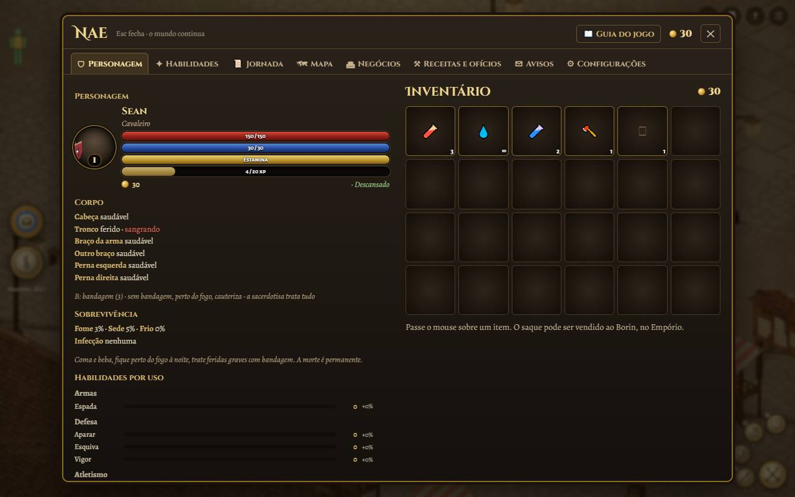
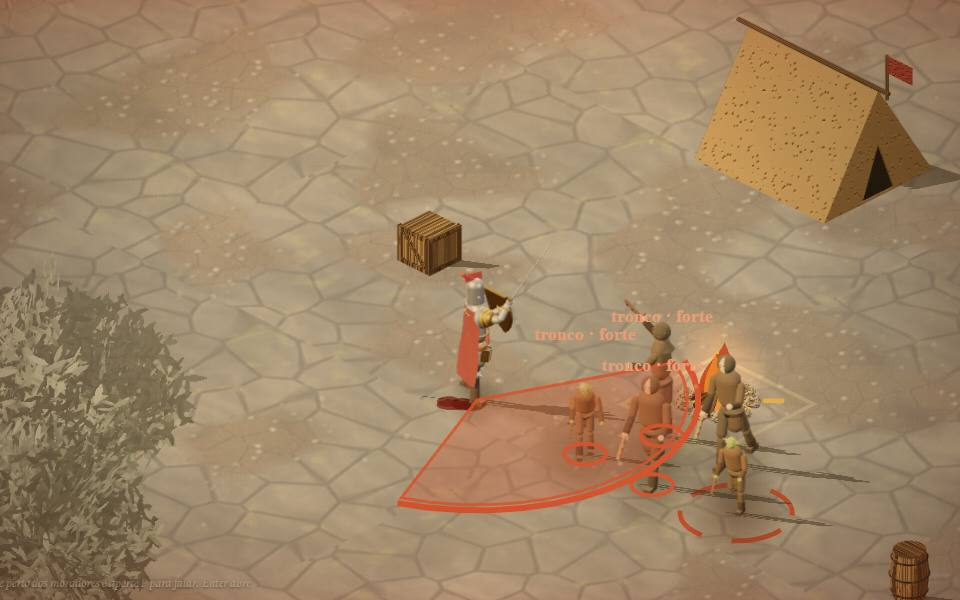
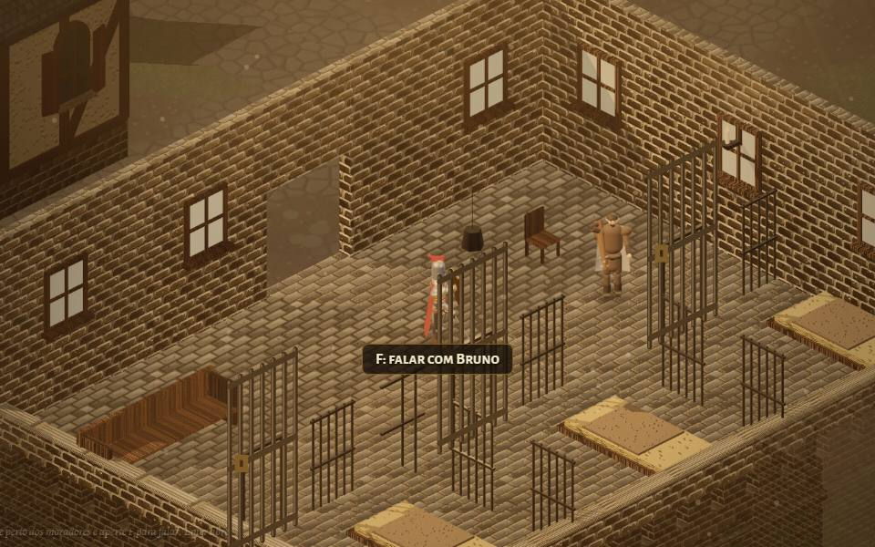
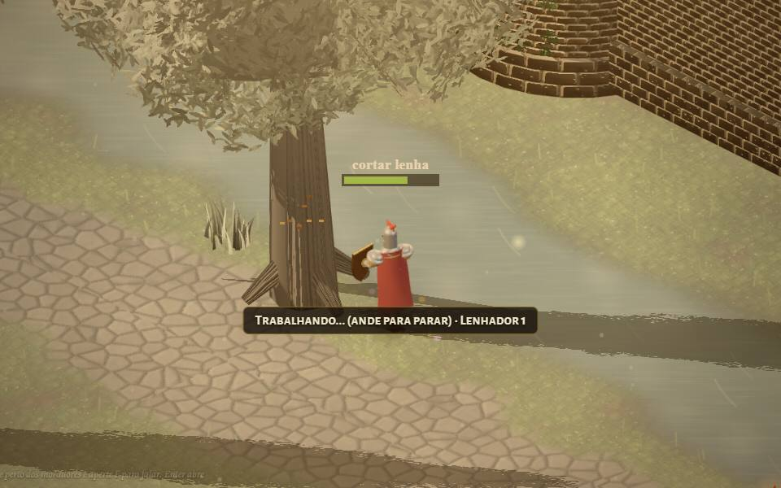
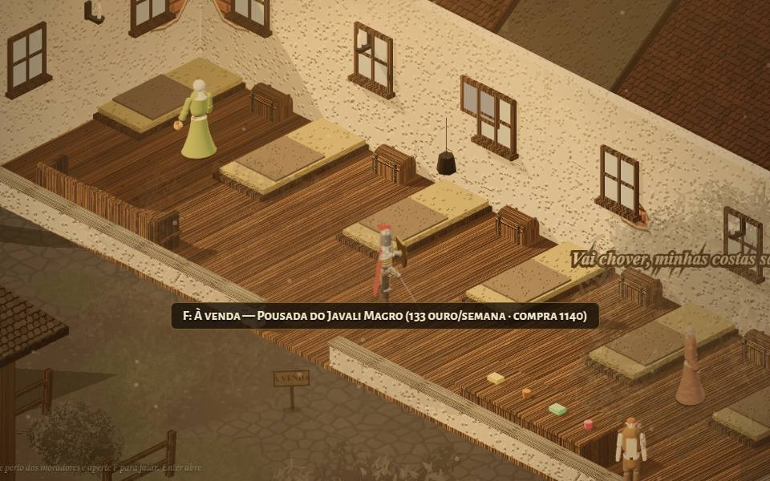
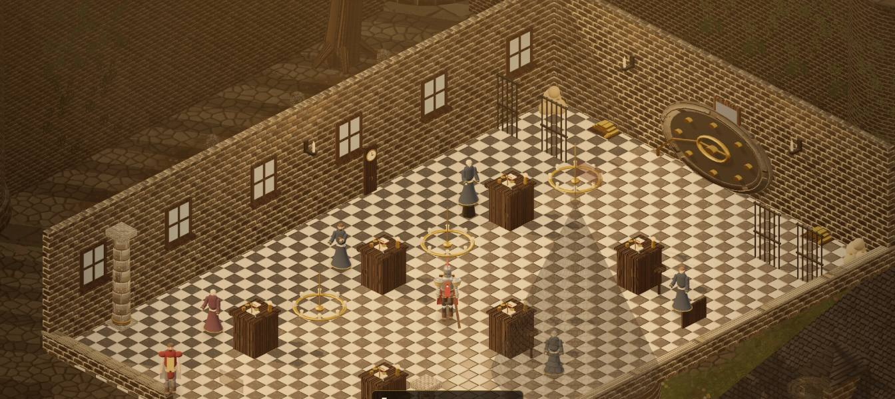

Todas as regras de Nae
Nae é um RPG multijogador no navegador: uma cidade medieval viva, com moradores que lembram de você, leis que valem, negócios de verdade e uma morte que é para sempre. Este é o apêndice do Guia do Viajante: tudo o que existe hoje, com os números exatos. Está começando? Leia primeiro o Guia do Viajante.
Jogar agora ▸ RoadmapComeçando
A tela inicial tem Jogar, Guia do jogo, Roadmap, Configurações e Sair, sobre uma paisagem de verdade (o castelo de Bled ao amanhecer) com névoa, água e pássaros, que muda de cor com a hora do seu relógio. Em Jogar abre o painel dos seus heróis: lá ficam todos os seus heróis. ＋ Novo personagem abre o formulário limpo (nome, vocação — Cavaleiro, Atirador ou Mago — e cor); a 🗑 ao lado de cada herói apaga (pede confirmação). Um herói novo começa do zero: não herda casa, negócios, banco nem fama de um herói antigo, mesmo com o mesmo nome. Depois aperte Continuar com este herói para ir aos Reinos Online.
- Reinos Online: cada jogador pode abrir o seu reino. A tela mostra os reinos abertos (nome, anfitrião, quantos jogadores, 🔒 se tem senha; reinos de outra versão aparecem apagados) e tem Entrar pelo código para o reino de um amigo. Em Criar reino você dá um nome, uma senha opcional e escolhe o mundo: Mundo novo (cidade do zero) ou um mundo guardado (os seus, a cópia dos reinos em que você jogou e o mundo do antigo reino único). O mundo roda no navegador do anfitrião.
- Quando o anfitrião sai, o reino fecha e todos voltam para a tela de reinos com um aviso. Quem jogava fica com uma cópia do mundo (atualizada a cada minuto e quando o anfitrião fecha a aba) e pode reabri-lo depois em Criar reino, com casas, negócios e economia como estavam. Seu herói é sempre salvo no seu navegador.
- Conexão: se a conexão cair por um instante, o jogo tenta voltar ao mesmo reino algumas vezes e você continua no mesmo lugar; se o reino sumiu de vez, ele fecha. Quando a rede bloqueia a conexão direta, o jogo usa um servidor de retransmissão. O jogo confere a versão publicada a cada 3 minutos e se atualiza sozinho. Entrar pelo menu inicial começa no Templo.
- Qualidade gráfica automática: o jogo mede a fluidez e baixa ou sobe a qualidade sozinho (6 níveis: Mínima, Muito baixa, Baixa, Média, Alta e Ultra), com um aviso discreto. Em Configurações dá para trocar para um nível fixo.
- Interiores sem trancos: o interior de cada prédio é montado uma vez só. Enquanto você anda, o jogo só monta o da porta logo à sua frente; quando você para, ele vai montando os prédios por perto, um de cada vez. Assim andar pela cidade não dá mais trancos ao passar perto das portas.
- Seu herói fica salvo neste navegador: nível, ouro, itens, ofícios. Imóveis, negócios e conta no banco ficam guardados no reino de quem é anfitrião.
Primeiros passos
Um roteiro para o seu primeiro dia em Nae. Siga na ordem e em meia hora você já tem ouro, ofício e um lugar para dormir.
- Crie o herói e entreEm Jogar, escolha ou crie o herói (nome, vocação e cor), aperte Continuar com este herói e entre num reino aberto ou crie o seu. Você aparece na Cidadela de Nae, perto da praça.
- Olhe em voltaOs dois medalhões na borda esquerda são fome/sede e frio. O chat fica no canto de baixo (Enter para falar). TAB abre o painel com tudo o que você precisa saber do seu personagem.
- Guarde a arma na cidadeAndar de espada na mão perto das sentinelas dá bronca (três avisos e você fica procurado). Aperte G para guardar; aperte de novo antes de sair para caçar.
- ConverseChegue perto de um morador e aperte F. Borin, no Empório, compra o que você caça e vende as ferramentas. A Capitã Varn, no quartel, dá contratos de caça.
- Ganhe o primeiro ouroNo quadro de avisos da praça há bicos rápidos (levar água, carregar caixas, varrer). Ou compre um machado no Empório e corte lenha: aperte F uma vez perto de uma árvore.
- Arrume onde dormirA Pousada do Javali Magro (no bairro sudoeste, atrás da casa da Marta) aluga cabines com porta por 3 de ouro por dia: catre, baú de 12 espaços e você acorda lá. Casa própria é bem mais cara — é a meta seguinte.
- Saia para caçarSaque a arma (G) e saia pelo portão sul. Clique para golpear (segure para carregar), botão direito ergue o escudo para o mouse, C esquiva. Leve pão e bandagens.
- Não morra de vezCaído, você tem 30 segundos. Peça para um amigo te reanimar (F segurado) ou te carregar (H) até a Irmã Lúmina, na capela. Sozinho e longe? Evite brigas que você não pode vencer.
Controles
| Tecla | O que faz |
|---|---|
| Botão ⤢ do chat | Deixa o chat maior (caixa e letra); aperte de novo para voltar. Fica salvo. |
| WASD / setas / clique no chão | Andar (no celular, o joystick). Shift corre (gasta estamina). |
| Clique esquerdo | Golpe lateral. Segure para carregar o golpe: aparece o arco no chão e a parte do corpo que vai acertar. |
| Roda ↑ / ↓ · Z | Golpe de cima (cabeça) · estocada · golpe de baixo (pernas). |
| Botão direito (segurar) | Erguer o escudo (ou a guarda) na direção do mouse. Erguido logo antes do golpe: defesa perfeita e contra-ataque. |
| R (cavaleiro com escudo) | Empurrão de escudo: desequilibra quem está na frente. |
| C | Esquiva (em combate). |
| Espaço | Trocar o alvo: cada toque passa para o próximo monstro, do mais perto ao mais longe. Amarrado ou agarrado: martele para se soltar. Na gazua: acerte o tempo. |
| X | Atacar o inimigo mais próximo (o arqueiro atira sozinho no alvo). |
| 1–4 (e 5–7) | Habilidades da vocação (e as da árvore de constelações do cavaleiro e do atirador). O mago usa 1–5 para as cinco magias do Pentagrama. Na árvore (K), clique numa habilidade já aprendida para equipá-la num espaço da barra (1–4); clique de novo para tirar. |
| Q · E · 0 · B | Poção de vida · poção de mana · beber do cantil · bandagem. |
| G | Guardar / sacar a arma. |
| H | Toque: pegar, carregar ou largar (objetos e caídos). Segurar: menu de agarrar (puxar pelos braços/pés, carregar nas costas, mata-leão, amarrar). |
| F | Interagir: falar com quem está perto (o clique só ataca), dar ouro e itens a outro jogador, beber água, coletar (um toque), reanimar (segurar), revistar corpos (segurar), chutar em combate. Mais de uma ação perto (por exemplo, falar com alguém e abrir um baú, ou a placa e coletar): abre um menu "O que fazer?"; F ou 1 faz a primeira, 2 a 9 escolhem as outras, Esc ou andar fecha. Seguir outro jogador: F nele e "👣 Seguir"; você anda atrás dele contornando as paredes. Para quando você anda, clica em Parar no alto da tela, ou quando ele entra num prédio ou muda de andar (você para na porta). |
| Enter | Abrir o chat para escrever (Enter envia, Esc fecha). Parado, o chat fica quase transparente. |
| O | Cavaleiro: alternar espada e escudo ↔ alabarda. |
| R | Arqueiro e mago: liga e desliga o ataque automático (nos monstros). |
| Botão ⚔ Pessoas | No canto da tela: liga o ataque automático em pessoas. Clique num jogador ou morador para ser o alvo; ele também revida em quem te atacar. Na cidade é crime, e os guardas veem. |
| Os botões de ataque (25% maiores) só aparecem com a arma sacada; com ela guardada, nos treinos, no banho ou caído, somem (as teclas continuam valendo). Ao atirar ou lançar magia, o personagem fica de frente para o inimigo. No ataque automático, o arqueiro usa as habilidades na hora certa: Chuva de Flechas em grupos, Flecha Perfurante em fila, Passo Ágil quando cercado e Tiro Duplo no resto. No menu (TAB), Q e E passam de uma aba para a outra. O medalhão do corpo, à esquerda, junta vida (anel de fora), mana (meio) e fôlego (dentro), com a silhueta mostrando as partes feridas. Caído, dá para se arrastar devagar. O progresso das perícias aparece no chat a cada ponto. Dojô e taverna rendem reputação ao dono conforme o movimento do dia (+1 a +3). | |
| Ctrl · Ctrl+Shift · V | Agachar · deslizar correndo · sentar no chão. Para sentar numa cadeira ou deitar numa cama, clique nela de perto. |
| T (segurar) | Roda de emoções: saudar, dançar, apontar, comemorar, surpresa, adorar, raiva, medo, tristeza. |
| Y | Render-se às sentinelas quando procurado. |
| R (caído no chão) | Desistir: você acorda no Templo (a morte permanente está desligada por enquanto). |
| TAB · I K J M N L | Painel do jogo (abre e fecha) e atalhos das abas: personagem e inventário, habilidades, jornada, mapa, negócios, imóveis. |
| Esc | Menu de pausa (o jogo continua atrás, escurecido): Continuar, Configurações, Guia, Roadmap e Sair para o menu inicial. |
| Configurações → Prédios na frente | Quando você está dentro de uma casa, os prédios entre você e a câmera podem ficar translúcidos (padrão), cortados na altura do joelho (estilo Tibia) ou escondidos. |
| N (dentro do seu negócio) | Abre direto a gestão daquele negócio — sem conflito com conversar (o F continua falando com as pessoas). |
| Roda do mouse · + − | Zoom da câmera (no mapa, zoom do mapa). |
No celular (deitado, em paisagem): o jogo abre um modo de toque. Joystick à esquerda para andar; à direita, o botão grande ⚔ ataca (segure para carregar o golpe ou puxar o arco), 🛡 defende (cavaleiro), F interage (acende quando há algo perto), 🗡 saca e guarda a arma, 🏃 liga e desliga a corrida, R auto-ataque, ◎ troca de alvo e 🦶 chuta. As magias e poções são tocadas na roda (segure a 1 para manter as Chamas do mago). No alto: menu (TAB), mapa, emoções e meditar, talentos, chat e deitar. A mira vai sozinha no alvo escolhido ou no inimigo mais perto; sem inimigo, na direção do joystick. Com o celular em pé aparece o aviso para deitar.
O menu do jogo (Esc)

Tudo fica num menu com abas. O mundo não para enquanto ele está aberto: seu personagem fica parado e os outros veem “📜 no menu” sobre ele.
Personagem
Vida, mana, estamina, corpo e ferimentos, fome/sede/frio e o inventário (24 espaços).
Progresso
As habilidades que sobem com o uso (combate, ofícios, sobrevivência) e o botão de exportar/importar o herói num arquivo.
Habilidades
A árvore de constelações: 1 ponto por nível; cada ramo termina numa habilidade nova.
Jornada
Contratos da Capitã Varn, reputação e ofícios.
Mapa
Zoom (roda, Reino / Cidade / Perto de mim) e ícones dos lugares; passe o mouse para ver o nome.
Negócios
Seus negócios e a imobiliária com o mapa da cidade.
Receitas e ofícios
Cozinha, oficinas, coleta e o que cada nível libera.
Avisos
Histórico de tudo o que aconteceu: avisos do reino, falas e mensagens para você.
Configurações
Gráficos, brilho, zoom, aviso dos golpes, chat, física das quedas, sala e senha do reino.

Nomes no mapa: no mapa (M), o botão Nomes escreve, de leve, o nome dos bairros; chegando mais perto aparecem as ruas e praças e, bem perto, o nome de cada prédio. As caixinhas ao lado filtram o que aparece (lojas, casas nobres, templos, jogadores…), e dá para arrastar o mapa com o mouse.
Vocações
| Vocação | Vida (nv 1) | Mana | Arma corpo a corpo | Aptidão |
|---|---|---|---|---|
| Cavaleiro | 150 (+24/nível) | 30 | Espada e escudo, ou alabarda (O) | Pele de Aço: 30% menos dano. |
| Atirador | 105 (+15) | 50 | Adaga; arco à distância (alcance 6) | Olho de Águia: 20% de crítico (×1,8). |
| Mago | 90 (+11) | 100 | Cajado de perto e as cinco magias do Pentagrama. Com uma varinha na mochila, magia mais forte e mais mana. | Mente Arcana: mana volta 2× mais rápido. |
Habilidades
- Cavaleiro: Golpe Brutal (220% e atordoa 1,4 s) · Grito de Guerra (atrai inimigos em 5 tiles, −20% de dano por 6 s) · Redemoinho (160% em volta) · Muralha de Ferro (−60% de dano por 6 s).
- Atirador: Tiro Duplo · Flecha Perfurante (atravessa a fila, 180%) · Chuva de Flechas (130% na área) · Passo Ágil (60% mais rápido, ataca 2× por 6 s).
- Ataque automático (arqueiro e mago, tecla R): o arqueiro solta a mesma flecha do tiro manual (puxada de 80%, voa em arco e crava) em todo monstro à vista, começando pelo mais perto ou por quem o ataca. O mago usa as magias dos botões: o jato de Chamas mira sozinho no ângulo que pega mais monstros, e as de apoio entram quando fazem falta (Passo do Vento para recuar quando um monstro encosta, Fé Inabalável com a vida abaixo de 55%, Florescer abaixo de 80%, Fonte se você pegar fogo). Sem mana, o modo continua ligado e volta sozinho com 35% da mana. Bichos mansos ficam em paz até atacarem. Desligado, vale a mira normal.
- Mago — o Pentagrama dos cinco elementos: o mago nasce com uma magia de cada elemento, nas teclas 1 a 5, e luta de perto com o cajado (à distância, só com o ataque automático).
- 1 Chamas (Fogo): segure a tecla para soltar um jato contínuo de fogo na direção do mouse (6 de mana por segundo). Quem é atingido arde por 3 s, os animais fogem, o jato acende fogueiras e pode pôr fogo no mato. Alcance e dano crescem com o nível, os pontos do Fogo e a perícia. O mago aponta o cajado para o alvo e o jato sai do cristal, como um bafo de dragão; a cor esquenta com a maestria (laranja, depois núcleo amarelo-branco e branco-azulado; com a força do Fogo acima de 70 o azul vira verde e, acima de 115, roxo). O chão fica chamuscado com brasas por 30 s, os bichos incandescem por dentro enquanto queimam e depois ficam carbonizados (cada queimadura escurece mais, até o corpo caído), e o mato queimado vira cinza.
- 2 Passo do Vento (Ar): uma lufada leva você 3,5 casas para onde está andando (ou para onde olha); no meio do passo nada te acerta.
- 3 Florescer (Terra): flores brotam na grama em volta e ficam 3 minutos; quem está nelas recupera um pouco de vida e fôlego, e os animais ali ficam calmos.
- 4 Fé Inabalável (Luz): cura 8% da vida de você e do aliado mais perto (até 3 casas).
- Meditar (roda de emojis, T): escolha um elemento e o mago toma a pose dele: Fogo ajoelhado com uma chama nas palmas, Água numa perna só com os braços ondulando, Terra em lótus com as palmas no chão, Ar deitado flutuando e Luz de braços erguidos ao céu (a arma fica guardada). A barra do elemento sobe no Progresso (cada vez mais rápido até uns 20 s), e vida, mana e fôlego enchem; comida e água caem aos poucos. Rende 60% a mais perto do elemento: fogo junto a fogueiras e à forja, água junto a rios, lagos e ao ofurô, terra na grama ou na floresta, ar no alto ou em campo aberto, luz ao sol. Magos meditando juntos (até 4 casas) ganham meditação em grupo: +25% de progresso por mago ao lado (até +150%, com 6 magos). Cada elemento tem sua aura, e o ambiente reage cada vez mais forte em 30 s: chamas brotam do chão em roda; o chão vira espelho d'água e gotas sobem; a terra racha, brota capim e pedras flutuam; um redemoinho levanta folhas; um selo dourado gira sob um feixe de luz. Depois de 1 minuto vem o transe profundo: a aura dobra, os olhos acendem, a perícia sobe 50% mais rápido e o corpo se recupera mais. Andar encerra; um inimigo perto interrompe.
- Muda: quando a força da Terra (perícia Terra + 10 por ponto nos talentos da Terra) chega a 25, a Fonte sobre as flores que você fez brotar faz nascer uma muda no meio do campo de flores, fixa no lugar (só uma por mago); perto dela aparece o ícone 🌱 nos efeitos. Num raio de 3 casas ela cura vida (3% a cada 2 s), devolve mana, enche o fôlego, dá uma casca protetora (15% menos dano) e acalma os bichos. O tipo segue o seu elemento mais forte entre Terra, Água e Ar: pequeno carvalho, pequeno salgueiro ou pequena cerejeira. A muda cresce com os dias (até 3) e com a força da Terra do mago: ganha galhos e folhas, e a cerejeira floresce.
- Árvore guardiã: com a força da Terra em 45, use o Florescer (magia da Terra) perto da sua muda para o ritual (8 s): runas acendem, a terra treme, a muda cresce, se arranca do chão e abre os olhos, em silêncio. O tipo segue a muda: carvalho antigo (largo e forte), salgueiro místico (alto, cabeleira até o chão, prende com ramos) ou cerejeira guardiã (torta, rápida). Ela cresce em 3 estágios (força 45, 70 e 90), até o tamanho de uma casa, ganhando detalhes e ataques: soco, depois arremesso de pedras e galhos, e no topo pedras grandes, troncos e o pisão do carvalho que derruba. Ordens com F: me acompanhe, guarde aqui, descanse, ataque aquele alvo (clique no inimigo) e ataque de longe e cura (ela fica atrás de você, do lado oposto ao inimigo e fora do jato de fogo, arremessa pedras, galhos e troncos e, a cada 3 s, cura você e os amigos a até 7 casas dela). Adulta ou anciã, dá para montar nas costas dela: WASD anda, 1 soco, 2 arremesso, 3 golpe especial (pisão do carvalho, laço do salgueiro, rajada da cerejeira), 4 golpe forte da anciã, F desce (o mago vai sentado nas costas dela, de pernas abertas); os golpes em você vão nela, e perto da cidade ela para. Ela nunca se aproxima dos portões: quando você vai à cidade, dorme num bosque e acorda quando você volta. Cada uma tem casca, raízes e copa próprias (o carvalho com bolotas e um ninho, o salgueiro com cipós e vagalumes, a cerejeira soltando pétalas), e um rosto que pisca, fala, franze na luta e entristece ferido. Golpes fortes arrancam galhos (braço ou perna): o galho voa, cai no chão e vira lenha (F recolhe 2 toras mais 1 por estágio); o membro rebrota em um dia do jogo, com galhinhos e folhas novas. Ao morrer, o corpo desaba em partes. É muito vulnerável ao fogo: queimada pelas suas próprias Chamas, lamenta a traição e vira cinzas, sem semente. Morta de outro jeito, vira tronco seco e deixa uma semente, que você planta (clique no inventário) para recomeçar.
- Curar moradores: a Mão de Luz, a Água Benta, a Chama Sagrada e o Poço de Luz da Oração curam também os moradores aliados (seus empregados, os soldados do seu lado no cerco e qualquer morador que não esteja brigando com você). A Mão de Luz levanta na hora um morador caído, com mais vida quanto mais forte a sua Luz.
- Evoluções do Ar e da Luz: liberadas pela força do elemento (perícia + 10 por ponto nos talentos dele): 25, 45 e 70. No grimório, clique na evolução liberada para pô-la na tecla daquele elemento, no lugar da magia base (clique de novo para voltar). Ar: Rajada (leque de vento na direção do mouse que empurra os inimigos e derruba os menores), Escudo de Vento (redemoinho de 8 s: desvia flechas, 30% menos dano e joga para trás quem ataca de perto) e Voo da Pluma (plana até 6 casas por cima de muros, cercas e rios, sem levar golpe no ar). Luz: Mão de Luz (coluna de luz no mouse que cega e atordoa os bichos, cura um aliado e põe de pé quem está de joelhos), Poço de Luz (círculo dourado de 3 casas por 10 s que cura quem está dentro) e Escudo de Prece (você e os aliados perto ganham por 12 s um escudo que absorve dano igual a 25% da vida).
- 5 Fonte (Água): enche o seu odre e o de quem está perto, todos bebem um gole, apaga quem está pegando fogo e as fogueiras, e rega as flores (duram mais e curam o dobro).
O Grimório do mago (tecla K)
No lugar das constelações, o mago tem um grimório: um livro aberto com o Pentagrama desenhado em tinta e ouro. Cada ponta é um elemento — Luz em cima, Água, Fogo, Terra e Ar — com um selo de cera da sua magia base. Descendo pela ponta até o centro ficam 2 talentos (1 ponto por nível, até 3 em cada) e 3 evoluções, liberadas pela força do elemento (a perícia mais 10 por ponto nos talentos daquela ponta): clique numa evolução liberada para ela entrar na tecla do elemento no lugar da magia base. No meio do Pentagrama ficam as combinações de dois elementos (veja abaixo). Passe o mouse para ler as anotações na página da direita.
Evoluções da Água: com força na Água, a ponta azul do Pentagrama destranca três magias novas. Névoa (força 25): uma nuvem fresca de 3 casas em volta de você por 10 s; os bichos perdem de vista quem está dentro (só enxergam quem encosta neles) e o fogo da roupa apaga. Correnteza (força 45): uma onda de 6 casas na direção do mouse que arrasta os inimigos, molha e derruba os menores e apaga o mato em chamas. Gelo Eterno (força 70): a água congela onde está o mouse e prende os inimigos num bloco de gelo por 4 s (os grandes, 2 s); quem já estava molhado leva mais dano.
Evoluções do Fogo: a ponta vermelha do Pentagrama destranca três magias com a força no Fogo. Faíscas (força 25): um leque de 5 brasas na direção do mouse (até 7 casas); cada uma acerta o primeiro inimigo no caminho e o deixa ardendo, e as que erram podem pôr fogo no mato. Bola de Fogo Maior (força 45): uma esfera enorme e lenta voa até o mouse (até 9 casas) e explode em 3,5 casas, derruba os bichos menores, põe fogo em quem estiver perto e deixa o chão queimando por 6 s; cuidado, o mago dentro da explosão também se queima. Chuva de Meteoros (força 70): o céu avermelha sobre a área onde está o mouse e, por 3 s, caem pedras em chamas, cada uma com um aviso no chão antes de explodir. A Bola de Fogo do cajado continua a mesma.
Evoluções da Terra: a ponta verde do Pentagrama destranca três magias com a força na Terra. Pele de Pedra (força 25): o corpo fica coberto de rocha por 8 s; você recebe 45% menos dano e nada empurra você, mas anda 15% mais devagar. Espinheiro (força 45): uma onda de espinhos rasga o chão até o mouse (7 casas), fere, prende por 2,5 s e faz sangrar quem estiver no caminho, e depois afunda de volta. Tremor (força 70): você bate o cajado no chão e a terra treme em 4,5 casas: todos os inimigos levam dano, os menores caem e ficam tontos por 2 s. A muda e a guardiã continuam como antes: a Fonte sobre as suas flores faz nascer a muda, e o ritual a desperta.
Minhas teclas: na página da direita do grimório, o painel Minhas teclas mostra as cinco teclas do mago, cada uma com uma lista do que pode ir nela: a magia base, as evoluções que a sua força já liberou e as combinadas aprendidas daquele elemento. Escolher na lista troca na hora; escolher a magia base desfaz a troca. No Pentagrama, cada evolução e cada combinada tem o seu próprio desenho, e um cadeado pequeno no canto enquanto não está liberada.
Ataque automático do mago (R): além das Chamas, o mago usa sozinho tudo o que está nas teclas. Primeiro as curas e defesas, quando fazem falta (vida baixa, monstros encostados, fogo na roupa); depois as combinadas e as evoluções de ataque, mirando onde há mais monstros. A Bola de Fogo Maior só sai se o alvo estiver longe o bastante para a explosão não pegar você.
Magias combinadas: os dez losangos no centro do Pentagrama juntam dois elementos. Cada uma pede força 50 nos dois elementos e 1 ponto de talento: quando o losango pulsa, clique para aprender. Clique de novo para escolher a tecla: ela entra na tecla de um dos seus dois elementos, à sua escolha, e pode ser trocada ou tirada depois. São as magias mais fortes do mago (30 a 38 de mana, 12 a 14 s de espera). Lançar a mesma de novo troca o campo antigo pelo novo.
| Magia | Elementos | O que faz |
|---|---|---|
| Tornado de Fogo | Fogo + Ar | Um redemoinho de chamas anda devagar na direção do mouse por 6 s: puxa os bichos menores em 2,5 casas, queima quem está nele e põe fogo no mato. |
| Campo de Defesa | Luz + Ar | Cúpula de 3,5 casas onde você está, por 8 s: flechas desviam, quem está dentro leva 40% menos dano e os bichos menores são jogados para fora. |
| Vapor Escaldante | Fogo + Água | Nuvem fervente de 3 casas no mouse, por 8 s: esconde os aliados dos bichos; os inimigos dentro queimam a cada segundo e ficam molhados. |
| Chão de Brasas | Fogo + Terra | O chão vira brasa em 3 casas no mouse, por 10 s: quem pisa queima e anda 40% mais devagar. |
| Chama Sagrada | Fogo + Luz | Roda de chamas douradas de 3 casas em volta de você, por 8 s: cura os aliados (4% da vida por segundo), tira o frio e queima os inimigos, em dobro os mortos-vivos. |
| Lodaçal | Água + Terra | Lama de 3,5 casas no mouse, por 10 s: os bichos menores atolam 3 s e depois andam 60% mais devagar (os grandes só ficam lentos); apaga o fogo e molha todos. |
| Tempestade | Água + Ar | Nuvem escura sobre 4 casas no mouse, por 8 s: a chuva molha e apaga o fogo, e a cada segundo cai um raio num inimigo (dano, 1 s tonto, mais dano em quem está molhado). |
| Água Benta | Água + Luz | Onda de 4 casas em volta de você: limpa infecção, sangramento e fogo dos aliados, cura 15% da vida e queima os mortos-vivos. |
| Tempestade de Areia | Terra + Ar | Nuvem de areia de 4 casas que acompanha você por 8 s: os inimigos dentro erram metade dos golpes e perdem de vista quem está a mais de 2 casas. |
| Bosque Sagrado | Terra + Luz | Clareira de flores e brotos de luz de 3,5 casas, por 20 s: quem fica parado ou sentado recupera 5% da vida por segundo e o fôlego; os animais ficam calmos. |
Dica: bicho molhado (Lodaçal, Tempestade, Vapor, Correnteza) leva mais dano do Gelo Eterno e dos raios.
Aparências: comum no nível 1, rara no 10, lendária no 20.
Combate

Dentro dos prédios também se luta: flechas voam até a parede (passando por cima de mesas e balcões) e as magias do mago (o jato de Chamas, a Prisão de Gelo, as brasas, as magias combinadas no chão e as de área) atingem os moradores como um golpe, com as mesmas regras de crime. Moradores atingidos por uma magia que atordoa ficam parados.
O corpo a corpo é direcional: você escolhe o golpe, o lado e a altura. Cada golpe tem preparação, impacto e recuperação, e gasta fôlego (a barra amarela, 200 no máximo).
| Golpe | Como | Acerta | Particularidade |
|---|---|---|---|
| Lateral | clique | tronco | o equilibrado (100%): arco largo, pega até 2 inimigos. Bloqueie do lado de onde ele vem. |
| De cima | roda ↑ | cabeça | o mais forte (140%), lento e fácil de ver chegando. Bloqueie no alto. |
| Estocada | roda ↓ | tronco | rápida e longa (80%, alcance 2), arco estreito. Fura o bloqueio alto e o baixo: bloqueie de lado. |
| De baixo | Z / botão lateral | pernas | o mais rápido (75%), deixa lento e às vezes derruba (1 em 4). Bloqueie embaixo. |
- Golpe carregado (segurar o clique): até 60% mais dano. Na cabeça, mata ou decapita (o elmo do cavaleiro reduz a chance pela metade); no tronco, abre sangramento grave; nos membros, ferida feia e pode decepar.
- Bloquear (botão direito): veja abaixo. No tempo certo (≈0,3 s antes do impacto) atordoa quem atacou e libera um contra-ataque mais forte.
- Finta: trocar de golpe durante a preparação (gasta fôlego).
- Alabarda: alcance 65% maior, 22% menos dano, mais lenta, duas mãos. Tem a sua própria perícia no Progresso.
- Arco: mira em arco com a trajetória exata e o ponto de queda (mostra a parte do corpo). Flechas fazem dano triplo e ficam cravadas (F para arrancar).
- Aviso dos golpes inimigos: um arco no chão mostra o golpe que vem (Discreto, Forte ou Desligado nas configurações).
Defesa e escudo
Segure o botão direito: o personagem ergue o escudo (ou a guarda) na direção do mouse e um arco dourado no chão mostra o que está protegido. Basta mirar no inimigo.
- Tempo certo: erga o escudo logo antes do golpe chegar (≈0,3 s, o arco brilha forte nesse instante). É a defesa perfeita: o inimigo cambaleia, você não gasta fôlego e ganha um contra-ataque mais forte.
- Fora do tempo: com o escudo já erguido, o golpe que vem pela frente é defendido gastando fôlego (com escudo, bem menos). Sem fôlego, a guarda quebra.
- De lado ou pelas costas: fora do arco, você leva o golpe inteiro. Vire o escudo para quem ataca.
- Sem escudo (alabarda, adaga, cajado), um golpe carregado defendido fora do tempo quebra a guarda.
- O escudo segura flechas que vêm pela frente (bloqueando no alto ou dos lados).
- Empurrão de escudo (R): curto, gasta 25 de fôlego, atordoa por um instante e empurra monstros pequenos. Espera 2,5 s para repetir.
- O escudo gasta: cada bloqueio tira um pouco (golpe carregado tira mais). A barrinha embaixo dos pontos mostra quanto falta. Quebrado, ele não protege mais — Hrodgar conserta na forja por 15 de ouro.
Monstros
Monstro que pegou você para alvo persegue até morrer ou até perder você de vista (uns 5 segundos sem ver). Fugir para a cidade não basta: ele entra atrás — mas as sentinelas saem para brigar com ele.
Guardar a arma (G)
Você entra no reino com a arma guardada (as sentinelas não implicam). A espada vai para a bainha na cintura; escudo, alabarda, arco e cajado vão para as costas. Leva meio segundo (a espada) ou um pouco mais (o resto). Com a arma guardada:
- Cavaleiro e Atirador dão soco: dano baixo, derruba e atordoa, mas nunca mata.
- O Mago continua lançando magias com as mãos.
- Coletar, carregar alguém e trabalhar num turno guardam a arma sozinhos; ela volta para a mão uns segundos depois.
- Na cidade, andar de arma sacada perto de sentinelas faz elas mandarem guardar (veja Lei).
Corpo, ferimentos e morte
- O corpo tem seis partes: cabeça, tronco, dois braços, duas pernas. Cada uma pode ferir, sangrar e ser decepada.
- Sangramento: estanque com bandagem (B), cauterize perto do fogo ou procure a sacerdotisa. Ferida grave sem bandagem pode infeccionar.
- Perna ferida: você manca. Braço da arma ferido: o braço pende. Pouca vida: anda curvado.
- Caído: 30 s para alguém reanimar (segurar F) ou carregar (H) até a Irmã Lúmina. Sentinelas carregam caídos inocentes até ela sozinhas.
- Membro perdido: o ferreiro faz prótese (perna de pau ou gancho) por 30; a sacerdotisa devolve os membros com o ritual por 120 de ouro — o primeiro é de graça.
Sobrevivência
Come e bebe sozinho: com fome ou sede abaixo de 30%, o personagem come a comida mais simples da mochila (pão antes de ensopado) e bebe chá ou do odre — nunca no meio de uma luta.
Os dois medalhões na borda esquerda mostram fome e sede (arcos) e frio (termômetro).
| Necessidade | Esvazia em | Como resolver |
|---|---|---|
| Fome | ~45 min | Pão, maçã, frutas, carne assada, ensopado, torta (cozinhar no fogão ou fogueira). |
| Sede | ~30 min | O cantil infinito bebe sozinho quando aperta. F perto de água (rio, poço, fonte): o personagem vai até a beira, vira e bebe. |
| Frio | 5 min (fora, de noite) | Fique perto do fogo, dentro de casa ou volte de dia. O inverno é mais frio. |
Fome, sede e frio no máximo tiram vida aos poucos. Correr e lutar dão mais fome e sede.
Tempo e estações
- Um dia do jogo dura 12 minutos reais (1 hora do jogo = 30 s).
- Onde você aparece ao entrar: sem casa, você chega pelo portal da feira, em frente à Taverna: um anel de faíscas se abre, mostrando um Nae espectral do outro lado, e você atravessa e para em frente a ele. Com casa (alugada ou comprada, casa, casarão ou apartamento), você acorda na sua cama. Com cabine na pousada, na cabine. Se a conexão caiu e você voltou em até 3 minutos, volta para onde estava.
- Relógio: o relógio antigo acima das medalhas, à esquerda, mostra a hora do dia (sol de dia, lua à noite).
- A cidade dorme: das 22h às 6h os moradores fixos vão para casa e dormem na cama (as lojas e o banco ficam sem atendente nesse horário). Os sentinelas e a Capitã dormem no alojamento do Quartel, em turnos: metade das 22h às 2h, a outra metade das 2h às 6h. Os funcionários do banco dormem no 2º andar do banco; Borin, Brom, Lina, Morgana e Mestre Anselmo, em cima do trabalho; Mestre Tetsuo, no Apto 201 do prédio do dojô, que é dele (não se aluga nem se vende); Dona Ilsa, perto do balcão da pousada (ainda dá para falar com ela); a Irmã Lúmina, na Casa 3, ao lado da Catedral.
- São 4 estações de 7 dias: primavera, verão (dias longos), outono (folhas caindo) e inverno (neve, geada, horta rende menos).
A cidade e os moradores

Nae tem a cidadela e a Vila do Oeste do outro lado do rio. Na cidadela: a praça do mercado no centro, com a Catedral da Aurora logo ao lado — da porta dela desce a avenida da Catedral (calçamento em mosaico, estátuas, estandartes da Aurora, canteiros e lampiões) até a praça do portão sul; a guilhotina fica em frente ao castelo, à esquerda da avenida; o castelo ao norte da praça, com o bairro nobre à direita (casarões de pedra dos dois lados de uma avenida com chafariz, jardins formais, estátuas e lampiões); o Banco de Nae no fim da rua oeste, com a praça do chafariz (bancos, flores e postes) do outro lado da rua; a taverna e as lojas a oeste da praça do mercado, com a casa amarela da Marta (quintal cercado com frutíferas, canteiros e a barraquinha) e a loja Elixires da Lua Prateada da alquimista Morgana (vitrais coloridos e latão) logo atrás delas, de porta para a rua de baixo; o escritório do Mestre Anselmo (imobiliária) fica no alto, ao norte, perto da muralha, com a porta para o sul; a Padaria da Praça fica logo ao sul da praça do mercado, com a porta para a avenida da Catedral; a pousada no bairro sudoeste, atrás da casa da Marta, de porta para o leste; o quartel no bairro sudoeste, de porta para o leste, com os bonecos de treino na frente; o estábulo junto ao portão sul; a cadeia no sudeste. Os moradores têm casa, rotina e necessidades: dormem das 22h às 6h, trabalham, almoçam, conversam na taverna e na praça.
Castelo de Nae: a torre de menagem de arenito quente, com telhados cônicos vermelho-escuros, ocupa o norte do pátio murado. A Torre do Rei, no nordeste, é a mais alta, com balcão e janelas góticas. No meio fica o salão do trono, com rosácea de vitral, varanda real, porta de ferragens e escadaria guardada por guerreiros de pedra. No pátio interno ficam o poço, o Estábulo Real e a Casa da Guarda com seus armeiros. O portão do castelo tem uma grade levadiça: ela desce ao anoitecer e só sobe ao amanhecer (de fora ninguém entra à noite; quem está dentro pode sair). No trono está a Casa Aurenfell (torre dourada com a chama, sobre carmim, lema “A Luz Não se Curva”): o brasão dela está nos estandartes do castelo e nas bandeiras da cidade.
Por dentro do castelo (aberto a todos por enquanto, para conhecer): a torre de menagem tem 5 andares e 2 subsolos. No térreo fica só o salão do trono, comprido, com duas fileiras de colunas, braseiros, crânios de dragão e o Trono de Espadas no fundo (dá para sentar quando o salão está vazio), e os dois corredores: o oeste desce aos subsolos e o leste tem a escadaria em vaivém, com um patamar em cada andar. No 1º andar, a cozinha, o salão de jantar e as galerias em volta do vão de onde se vê o salão lá embaixo; no 2º, o Pequeno Conselho, a biblioteca, a Mão do Rei, o meistre, o mestre da moeda e a galeria dos retratos; no 3º, hóspedes, criados e a sala de música; no 4º, os aposentos reais e o terraço. No −1, adega, despensa, tesouro e o calabouço; no −2, a cripta, a câmara de tortura e as masmorras.
A corte: no trono está o Rei Edric, o Velho, doente; quem governa de fato é Lorde Osric Vane, a Mão do Rei. A saúde do rei piora com os dias: nos dias ruins ele fica de cama e a Mão preside as audiências; o Meistre Aldous (2º andar) aceita 3 ervas para aliviá-lo e trata você por 30 de ouro. Também moram e trabalham no castelo o Mestre Bram, o Arauto, o Mestre da Moeda, o Comandante Sor Gareth Holt, o Príncipe Alaric e a Princesa Lyra, criados, o carcereiro Grum (−1), o torturador (−2) e a Guarda Real (portão, pé do trono, escadarias e uma dupla de ronda no pátio). De dia cada um fica no seu posto; à noite o salão esvazia e um guarda passa por ele de tempos em tempos.
A sucessão: o trono passa pela linha de sangue, sem votação: primeiro o Príncipe Alaric, depois o irmão do rei, Lorde Corwyn Aurenfell, e depois as cinco casas, numa ordem de parentesco sorteada a cada reino. A aba Casas mostra quem está no trono, a linha e a legitimidade de cada um (o apoio do conselho, 40%, do povo, 35%, e da Fé, 25%).
- Todo rei envelhece: um ano a cada 3 dias do jogo. O velho Rei Edric pode adoecer de vez a partir do dia 20 do reino; um rei novo, a partir dos 60 anos. Doente de vez, ele tem 5% de chance por dia de piorar, e sai a notícia de que não passa de dois dias.
- Lorde Corwyn, o irmão que o rei baniu, volta pelo portão no dia 20 e se hospeda na Pousada do Javali Magro, comprando apoio (a legitimidade dele sobe a cada dia).
- A morte: na manhã seguinte, o sino da praça toca e o trono fica vazio (a Mão do Rei preside). Das 7h às 9h, quatro carregadores levam o caixão pelas ruas até a Catedral, com a Guarda Real escoltando e a corte atrás. O povo acompanha conforme a popularidade do morto: rei amado tem fileiras de moradores chorando; rei odiado, uns poucos, e alguns comemoram. Às 18h o próximo da linha é coroado no salão do trono, diante da corte, dos cinco lordes e da Guarda Real: quem estiver no salão ganha 10 de favor da coroa.
- Rei novo: os títulos continuam, mas o favor com a coroa cai pela metade; quem jurou lealdade à casa do novo rei ganha 10.
As tramas: dá para matar alguém da realeza ou da linha de sangue (o rei, o herdeiro, Lorde Corwyn ou um dos cinco lordes), e as casas desleais também tramam sozinhas.
- Vesper, o Contrabandista: das 21h às 4h, sentado numa mesa do 2º andar do Ronco do Dragão, com dois capangas de pé ao lado (F; quem bate nele ou num capanga apanha dos dois). Vende veneno (150 de ouro) e assassinos: 300, 600 ou 1.000 de ouro para 30%, 50% ou 70% de chance. O assassino age antes do amanhecer; se falhar, há 30% de chance de ele entregar o seu nome.
- Veneno (o alvo morre na madrugada seguinte; 20% de chance de o veneno ser rastreado até você): no fogão da cozinha do castelo (1º andar) às 18h, quando a cozinheira desce à adega (alvo: o rei); subornando o copeiro Pip com 100 de ouro (alvo: o rei); no fogão da cozinha de um casarão às 18h (alvo: o lorde; valem as regras de ser pego); ou na taça do lorde onde ele bebe, no Clube, na Casa de Veludo ou nas Termas (F perto dele), se nenhum guarda estiver por perto.
- Quem é rastreado ou pego tentando fica procurado por atentado contra a realeza: se a Guarda pegar, é a guilhotina. A exceção: se a morte abriu caminho para o novo rei (você matou o rei, ou o herdeiro que estava à frente dele), na coroação o novo rei perdoa tudo e lhe dá um cargo na corte. Matar um lorde, ou tentar e falhar, não rende perdão.
- Os cargos: o vago, ou o do conselheiro menos leal (primeiro Lorde Osric, a Mão do Rei; depois o Mestre da Moeda, o Comandante e o Meistre). O conselheiro que sai vira um ajudante que segue trabalhando em seu nome. Mão do Rei: nos dias em que o rei não recebe, o escrivão atende as audiências; estando no salão do trono, você ganha 20 de ouro e 2 de favor por audiência. Mestre da Moeda: 100 de ouro por dia no banco. Meistre: quem se trata no consultório paga 30 de ouro a você, e você se trata de graça. Comandante: pelo carcereiro Grum, você manda soltar qualquer preso, sem fiança.
- O trono: só o rei senta nele. Nos dias ruins, quem preside as audiências fica de pé ao lado.
- Quando um lorde morre, o herdeiro vira lorde e a casa ganha um herdeiro novo. Quando o rei morre, seguem o sino, o cortejo e a coroação. Se a coroa chegar a uma casa, a família inteira muda para o castelo e o casarão fica só com o criado e os guardas.
- Tramas das casas: uma casa desleal à coroa e entre as primeiras da linha pode mandar matar quem está logo à frente dela. Um dia antes, a trama vira um segredo (peso 5) que pode sair da Dama Ysolde. Leve o segredo à Mão do Rei, ao Comandante ou ao rei: o lorde vai a julgamento, a casa perde prestígio e vai para o fim da linha, e você ganha 200 de ouro e favor da coroa.
- O herdeiro bastardo: uma vez por reino, a Ysolde pode vender o segredo de que o Príncipe Alaric não é filho do rei. Espalhado como boato, derruba a legitimidade dele (ele continua na linha).
Rebelião e cerco: o próximo da linha de sangue pode se rebelar e cercar o castelo, sem aviso.
Rebelião de um jogador: quem fundou uma casa pode levá-la à guerra quando quiser. Fale com o criado da sua sede e escolha "Marchar contra o rei": os soldados saem do casarão e marcham até o portão do castelo, e a cidade inteira é avisada. Eles esperam por você no portão (até 2,5 minutos); o cerco começa quando você chega. Lutam do seu lado os homens da casa (5 de força = 1 soldado), os seus seguranças e os capangas do Vesper, os seus vassalos (que são chamados) e as casas NPC que têm 40 ou mais de favor com você. Você é o líder: para vencer, mate o rei ou capture-o (com 20% de vida ou menos ele se rende) — a coroa passa para você e o rei capturado vai para a guilhotina da praça. Se você cair no cerco, a rebelião acaba e é você quem vai para a guilhotina (longe do castelo, você escapa, mas a casa perde quase toda a força e o ouro).
- Quem se rebela: só o próximo da linha, quando o poder da casa dele passa da média do poder das casas leais à coroa vezes a legitimidade do rei. Lorde Corwyn, se for o próximo, se rebela com as tropas da casa mais desleal. Depois de um cerco, nenhum outro por 3 dias.
- As tropas: os rebeldes trazem um soldado a cada 5 de poder (de 4 a 20) e o líder; a coroa defende com um soldado a cada 5 do poder dela, mais a Guarda da cidade. Metade dos defensores guarda o pátio e metade o salão do trono. A Guarda da cidade muda de lado se o comandante tiver sido subornado (3.000 de ouro, no menu dele; ele pode denunciar você por traição) ou se o rebelde tiver mais legitimidade que o rei.
- A lealdade: cada soldado da coroa tem uma lealdade, que vem da legitimidade do rei (a Guarda Real é mais leal). Depois dos primeiros 30 segundos, quando a defesa fica em desvantagem, os pouco leais largam as armas e saem do castelo; os muito leais lutam até morrer.
- Os jogadores: bater num soldado põe você do lado contrário (no cerco, não é crime). Quem cai fica fora daquele cerco. Sem jogador a menos de 40 casas, a luta é calculada; quando alguém chega perto, os soldados voltam.
- O fim: os rebeldes vencem quando matam ou capturam o rei, que luta ao lado dos soldados (ferido, com um jogador batendo nele, o rei pode se render; não é preciso sentar no trono): o líder é coroado na hora, os defensores que restam se rendem e os jogadores do lado da coroa de pé no castelo vão à guilhotina (o pedido à Dama salva). Se o líder rebelde cair, acabou: os rebeldes que sobraram fogem, o rei continua, o líder vai à guilhotina e a casa fica com quase nada de poder e ouro.
Fundar a sua casa: no arauto do castelo ou na aba Casas (“Fundar a sua casa”).
- O que o conselho exige: o título de Lorde da coroa (o pedido à Dama pode suprir o favor que falta, numa audiência), um casarão comprado no bairro nobre, 5.000 de ouro (banco, cofres e bolsa) e o apoio de duas casas (favor 30 com elas).
- Construir um casarão: quem tem o título de Lorde pode construir no lote vazio do bairro nobre (onde era a Casa Aldren): F perto da entrada, 3.000 de ouro (banco, cofres e bolsa) e a fachada à escolha (pedra clara, enxaimel ou tijolo). A obra leva 3 dias do jogo: o lote vira canteiro, com material, andaimes que sobem a cada dia e três operários trabalhando das 7h às 19h. No fim, o casarão aparece para todos e é seu (serve para fundar a casa). Só existe um lote, então só um casarão novo por reino.
- Casas caídas: uma casa NPC fica sem herdeiro quando o herdeiro morre sem filhos para tomar o lugar (ninguém de fora assume; um filho que nasça vira o herdeiro). Se o lorde morrer assim, a casa se extingue. A casa que lidera uma rebelião e perde o cerco vai para o exílio. Caída, a família some e a casa sai da linha, das tramas, dos casamentos e dos sequestros; na aba Casas aparece como extinta ou no exílio.
- O casarão vago: um Lorde com favor da coroa 50 pede ao rei na audiência (um por jogador). Se o rei for um jogador, ele decide. O casarão vira seu e serve para fundar a casa.
- Jurar lealdade sem poder entrar: os guardas da porta do casarão só deixam passar quem já é da casa. Fale com um deles (F) e escolha "Quero jurar lealdade": ele chama o criado, que vem até a porta e recebe o juramento em nome do lorde.
- Tarefas para os vassalos: no criado do casarão, o lorde cria até 3 tarefas (caçar, entregar itens, montar guarda no casarão por duas horas, acompanhar o lorde), com recompensa em ouro (paga na hora de criar; volta se retirar) e favor. O vassalo aceita no criado e tem até o dia seguinte; o jogo confere sozinho. Cada tarefa cumprida dá +1 de prestígio à casa.
- Herdeiro da casa: o lorde escolhe entre os filhos adultos, o cônjuge e os vassalos; sem escolha, o filho mais velho adulto, depois o cônjuge, depois o vassalo de mais favor. Se você for rei e perder a coroa (ou abdicar) com um filho adulto ou o cônjuge NPC como herdeiro, ele sobe ao trono como rei da sua casa: você continua dono da casa, ganha favor da coroa como pai (ou mãe) do rei e pode até marchar contra ele para tomar a coroa de volta.
- Casa parada: a renda da casa só sai nos dias em que o lorde entrou no reino.
- Passagem secreta: na muralha leste do castelo (do lado de fora, à direita) há uma pedra solta. F nela: uma passagem estreita leva para dentro do castelo, e de dentro para fora, a qualquer hora e para qualquer um. Lá dentro as regras de sempre continuam: à noite, quem não pode estar no castelo e for visto pelos guardas é posto para fora.
- Zonas do castelo: o térreo é aberto de dia. Os andares de cima (cozinha e jantar, conselho e biblioteca, quartos dos criados, aposentos reais) só se abrem para quem tem cargo na corte, trabalha no castelo ou traz convite; o subsolo (calabouço e sala de tortura), só para a guarda, o carcereiro e o torturador. Quem é casado com a família real mora lá e entra em tudo, a qualquer hora. Os títulos não abrem andares. Visto onde não devia por 2 segundos: posto para fora e procurado.
- Convite: a Mão do Rei dá a quem tem favor da coroa 30 um passe de um dia para o 1º e o 2º andar.
- O rei: no trono das 9h às 12h e das 14h às 17h (a fila do arauto funciona nos dois turnos), conselho das 12h às 14h, jantar das 19h às 21h, sono a partir das 22h.
- Trabalhar no castelo: contrato de 3 dias com o chefe do ofício e turnos de 75 segundos dentro da sua área. Guarda real (Comandante, 40 de ouro, +1 de favor da coroa por turno, todos os andares, também à noite); serviçal (Marga, a cozinheira, 30; pode pôr veneno na taça do rei sem ser visto); escriba (o Meistre, 35; 10% por turno de ouvir um segredo da corte); carcereiro (35) ou torturador (45) com Grum, que interrogam os presos.
- Calabouço: crimes contra a coroa e presos nobres vão para o calabouço do castelo; o resto, para a cadeia da cidade. Também ficam lá até 2 presos NPC: espiões e capangas das casas, e rebeldes capturados depois de um cerco.
- Tortura: na sala de baixo, com o Mestre Thorne, só para o carcereiro e o torturador. Cada sessão (uma a cada 20 s) tem 40% de arrancar um segredo e fere braços e pernas; da 3ª sessão em diante o preso NPC pode morrer e o jogador desmaia. A tela escurece; nada é mostrado.
- Missões secretas da Ysolde e do Corvin: um marcador (anel e seta na borda da tela, como nas entregas) leva até o lugar: a porta do casarão e, lá dentro, o cofre ou a escrivaninha.
- Magias contra NPCs: as magias de área do mago atingem também os moradores (com as mesmas regras de crime de um golpe), menos os seus empregados.
- Aluguel: sai sozinho do banco toda semana; o painel de imóveis mostra a próxima cobrança. Se atrasar (sem ouro), aparece "Pagar agora".
- Testemunhas: num trabalho sujo dos seguranças, a vítima não conta como testemunha, e quem está dentro de um prédio não vê a rua (nem o contrário).
- Pecados: em cada reino pode haver um caso escondido entre dois irmãos adultos (de uma casa, ou o Alaric e a Lyra) e esposas de lordes com amantes; alguns filhos do casal (até o herdeiro) são do amante. São segredos de peso 5 (Corvin, Veludo, escribas, tortura) que dizem onde e quando o casal se encontra.
- Boato e prova: espalhar pela Dama Ysolde derruba a legitimidade e o prestígio, mas ninguém sai da linha. Prova: a carta escondida no quarto (segure F parado 3 s; valem as regras de invasão), uma testemunha comprada da Ysolde (400) ou o flagrante (às 22h, 3 s perto dos dois). Levada ao Meistre ou à Irmã Lúmina, a Fé condena a casa para sempre, ela perde prestígio, e o filho do amante (ou os dois irmãos) sai da linha e da herança.
- Seguranças no cerco: quando um cerco começa, os seus seguranças vão para o castelo e lutam do lado que você apoia (a casa a que jurou lealdade, ou a coroa). Quem cai tem 50% de morrer de verdade.
- Levante do povo: com o rei abaixo de 15% de legitimidade, 10 plebeus armados (mais fracos que soldados) se juntam aos rebeldes; se passarem 4 dias assim sem cerco, o povo se levanta sozinho em nome do próximo da linha.
- Irmãos Descalços: lutam contra um rei condenado pela Fé (legitimidade abaixo de 15%, bastardia ou pecado provado); cada Irmão de pé dá +10% de força aos soldados do lado deles. Quem derruba um Irmão fica procurado por sacrilégio, e a casa dele perde Fé e é condenada no sermão por 3 dias.
- Dívidas: podem dever a você os inquilinos das suas casas (às vezes atrasam o aluguel), quem pegou empréstimo com você, o lorde que paga a chantagem em parcelas e a loja que você financiou.
- Emprestar e financiar: no banqueiro. Empréstimo a moradores com nome ou a jogadores: 100, 300 ou 1.000 de ouro, de 5% a 20% por semana, por 7 dias (juro alto atrasa mais). Financiar uma loja NPC: 500 ou 1.000; ela devolve 13% por dia durante 10 dias.
- Chantagem em parcelas: ao pedir ouro a um lorde, dá para receber em 3 parcelas diárias, com 20% a mais.
- Cobrar: no menu do segurança, “Cobrar uma dívida”: ele vai até o devedor e volta com o ouro ou com uma recusa (palavras 50%, ameaça 70%, surra 90%). A surra custa simpatia e, se um sentinela vir, o segurança é preso e você o perde.
- Vista grossa: o Capitão da Guarda cobra 30 de ouro por sentinela de um bairro; até o fim do dia, os sentinelas de lá não prendem os seus seguranças.
- Cores das casas: cada nobre veste as cores da casa com tom e detalhes próprios (tecido mais claro ou mais escuro, acabamento dourado, prateado ou na segunda cor, gola, diadema, capa); os guardas usam a armadura da casa com a segunda cor na gola.
- O brasão: nome, lema, um de 12 símbolos (lobo, cervo, leão, torre, espada, corvo, rosa, lua, sol, árvore, peixe, machado), duas cores do campo e a cor do símbolo, com prévia ao vivo.
- A sede: ao fundar a casa (ou terminar o casarão do lote), o casarão vira sede de casa nobre, como as das cinco casas: planta de casarão nobre, hera na fachada e porta dos fundos com tranca (só a família e os vassalos passam; quem arromba com gazua entra, e os rivais podem invadir). A decoração que você tinha feito volta para a mobília.
- O que a casa ganha: entra na disputa como sexta casa (aba Casas, Voz do Povo e fim da linha de sangue); brasão e estandartes na sede, um criado e dois guardas com as cores dela; renda diária de prestígio × 2 no banco. Pelo criado, o dono contrata homens de armas (300 de ouro, +5 de força), enche o cofre da casa (500 de ouro) e escolhe o herdeiro; os outros jogadores juram lealdade e doam. Cada vassalo soma prestígio todo dia.
- Vendeu o casarão? A casa fica sem sede (sem guardas nem brasão) até você comprar outro. As casas de jogador ficam fora das campanhas, das tramas das casas NPC, das invasões e das rebeliões automáticas.
O jogador rei: quando a linha de sangue chega à sua casa, você é o rei de Nae (não há rei NPC; a Mão atende as audiências dos outros jogadores e só você senta no trono).
- O trono: das 8h às 12h, perto do trono, aperte F. Fora disso, ou se você não estiver no jogo, a Mão governa e os decretos continuam.
- Impostos: de 0 a 30% sobre os aluguéis e o faturamento dos negócios dos jogadores, uma vez por dia, mais a parte da cidade; vão para o tesouro, que paga 100 de salários por dia. Você saca de 500 em 500. Acima de 15% a legitimidade cai todo dia; abaixo de 5% o tesouro esvazia e, sem salários, a legitimidade cai.
- A audiência: às 6h chegam três casos tirados do mundo (casa endividada, briga entre casas, Lorde Corwyn pedindo perdão, jogador procurado, preso no calabouço, a Fé, os mercadores, a colheita). O que você não decidir até o meio-dia a Mão decide, e cada caso sem resposta tira um pouco de legitimidade.
- Poderes: perdoar, declarar procurado (10 min) ou prender no calabouço (5 min, só quem está no castelo); dar e tirar títulos; nomear a Ysolde Dama da corte; nomear e dispensar a Mão, o Mestre da Moeda, o Comandante e o Meistre; escolher o herdeiro; abdicar.
- Perde a coroa como um rei NPC: a idade (a partir dos 60 pode adoecer), veneno, punhal ou um cerco (se cair no castelo durante o cerco, ou sair do jogo no meio dele). O personagem continua vivo. Herança: o herdeiro escolhido entre os vassalos; senão o vassalo de mais favor; senão o próximo da linha. Nenhuma rebelião começa contra um rei que não está no jogo.
A cidade nova: a cidade foi replanejada para enxergar melhor as portas.
- Prédios no lugar novo: a Catedral foi para o leste, junto da Casa de Veludo; a Casa Valcarne fica na praça ao sul do castelo; o Banco, o Quartel, a Cadeia, a Pousada, a taverna e várias lojas mudaram de lugar ou de porta. Ruas novas ligam todas as portas (Rua das Termas, Rua da Catedral, Rua do Sul, Rua da Pousada), e o mapa (M) mostra os nomes novos.
- O lote vazio: a antiga Casa Aldren virou um terreno cercado no bairro nobre. Quem tinha a Casa Aldren recebeu de volta o que pagou.
- Casarões das casas: a planta estica para o tamanho de cada um. A porta dos fundos e a janela com hera ficam sempre numa parede leste ou sul, à vista.
- Termas: vestiário na entrada; sala morna (massagem e vinho), pátio a céu aberto e sala fria (com a cascata caindo do norte para o sul) no meio; sala quente com os leões no fundo. A sala quente ficou maior (as Termas passaram de 18 para 20 casas de fundo), com a piscina quente mais larga e mais bancos.
- Muralha maior: a muralha da cidade avançou 4 casas para cada lado, com o fosso, o anel de estrada e os portões acompanhando. Sentinelas, rondas, visitantes e mensageiros usam os portões novos. Vários prédios mudaram de lugar de novo (Valcarne, Thornvale, o Clube e a Casa 23 encostam na muralha norte), cada um com caminho de pedra até a porta.
- Cadeia: duas celas e, no canto, o beliche do carcereiro e do carrasco.
- Muralha norte: a muralha avançou mais 12 casas ao norte e 9 a leste, com fosso, ponte e portão norte novos. A Rua da Muralha Norte corre na frente da fileira de cima (Banco, Casa 23, Casa Valcarne, Casa Thornvale e Clube do Cervo de Prata, que encostam na muralha). Valmont e Casa de Veludo ficam no leste novo, perto do portão leste; a Moranthe desceu para o lado da Catedral. Três praças novas: a Praça do Portão Norte (ao lado do Banco), a Praça do Clube e o Jardim Leste, com bancos para sentar. Banco, Clube, Catedral, Casa Draemor, Casa Eldren e duas casas comuns ficaram maiores, com mais móveis. A Valcarne agora abre para o sul.
- Pousada: agora com 5 cabines. Taverna: mais funda, com mais mesas e o mezanino redecorado. Cadeia: duas celas. Catedral: bancos por toda a nave.
- Janelas: cada prédio tem as suas por dentro (vitrais na Catedral, arcos de pedra no Banco e nos casarões, seteiras na Cadeia, postigos de madeira na taverna e nas casas, vitrine nas lojas, cortinas de veludo na Casa de Veludo).
Regras da corte:
- A Rainha Isolda, esposa do Rei Edric e mãe do Alaric e da Lyra, vive no castelo (ao lado do trono de dia, nos aposentos à noite). Quando o Alaric é coroado, ela vira a Rainha-Mãe.
- A rotina do rei: trono das 8h às 12h; conselho das 12h às 14h (andar 2, com a Mão, a Moeda, o Comandante e o Meistre); jantar das 19h às 21h (andar 1); dorme a partir das 22h (andar 4).
- Invasão no castelo: térreo aberto de dia; 1º andar Escudeiro, 2º Cavaleiro, acima e subsolos Lorde; à noite (21h–6h) só Lordes, quem tem cargo na corte ou trabalha no castelo. Quem é visto onde não pode por 2 segundos (4 agachado) é posto para fora e fica procurado por invasão.
- A prova da bastardia: quando o segredo existe, as cartas da Rainha Isolda ao amante ficam numa gaveta do aposento real (andar 4, F para revirar). Levadas ao Meistre ou à Irmã Lúmina, tiram o Alaric da linha de sangue, e a Fé condena a Casa Aurenfell para sempre.
- Lorde Corwyn tem um temperamento sorteado a cada reino: o leal nunca se rebela contra o herdeiro. É um segredo que pode sair do Corvin.
- O Vesper, chefe do submundo: proteção (10% da renda dos seus negócios por dia, mínimo 10; metade com a marca do submundo reconhecida) faz os gatunos não roubarem você; aluga até 6 capangas a 200 cada, que entram no próximo cerco do lado da casa que você apoia. Denunciado ao Capitão da Guarda, some da viela por 3 dias.
- Título de Lorde: 5.000 de ouro, favor 220 e reputação 50 com a Nobreza; o rei aceita com 60% de chance e, se recusar, só depois de 5 dias. O pedido à Dama garante. Reputação com a Nobreza: tarefas (+3) e doações às casas, contratos reais (+3), presença na coroação (+5), doação ao tesouro.
- Os nobres envelhecem: lordes, cônjuges e herdeiros têm idade (na aba Casas): adultos um ano a cada 3 dias, crianças um ano por dia até os 20; a partir dos 60 podem adoecer (aviso de 2 dias), mas ninguém adoece antes do dia 20 do reino. Lorde morto: o herdeiro assume. Cônjuge morto: o lorde fica viúvo.
- Seguranças: até 5 por jogador.
Linhagens: as famílias nobres têm filhos, que crescem, casam e herdam.
- Filhos: cada casa começa com até 2 filhos mais novos (na aba Casas, com a idade). Os casais das casas e o casal real (Rei Edric e Rainha Isolda) têm 3% de chance por dia de ter um filho, até 3, enquanto a mãe tem até 45 anos. A criança aparece menor no casarão (ou no castelo) e fica adulta aos 20 anos, envelhecendo um ano por dia até lá.
- Herança: quando o lorde morre, o herdeiro vira lorde e o filho mais velho vira o novo herdeiro. Se o novo lorde for criança, o cônjuge governa como regente até os 20.
- Limite de 5 nobres por casa (lorde, cônjuge, herdeiro e até 2 filhos): o filho adulto que sobra casa fora da cidade e vai embora.
- Casamentos entre casas: a cada 30 dias, duas casas com boa relação casam um filho mais novo de uma com o herdeiro da outra; ele sai da linha da sua casa, e as casas viram aliadas.
- A família real: os filhos do rei entram na linha logo depois do Alaric. A Princesa Lyra entra depois do Lorde Corwyn, mas contesta a coroa: na coroação do Corwyn vence quem tiver mais legitimidade, e quem perde pode se rebelar depois. Apoie a Lyra ou o Corwyn falando com eles (200 de ouro, +1 de legitimidade).
- Regência real: se o rei novo for criança, o Lorde Corwyn ou a Rainha-Mãe Isolda governa até a maioridade (vence quem tiver mais legitimidade e mais casas do seu lado); a Mão preside as audiências.
Casamento:
- Com nobres: peça a mão no menu de quem governa a casa (favor 40). Candidatos: o herdeiro (dote 1.500), os filhos mais novos adultos (500) e o lorde viúvo (1.500). Chance de 50%, mais 10% a cada 500 a mais no dote. Recusado, o dote volta menos 10%, e só dá para pedir de novo no dia seguinte.
- Com a família real (Alaric, Lyra, filhos adultos do rei): peça ao rei, ou à Mão, na sua vez na audiência; favor da coroa 40, dote de 3.000.
- A cerimônia: depois do pedido aceito, você tem 3 dias para casar. Quando quiser, vá à Catedral da Aurora e peça à Irmã Lúmina para começar. Se o prazo passar sem casamento, o noivado acaba (−10 de favor, metade do dote volta).
- Casado: você entra na casa do cônjuge (+40 de favor, a porta do casarão abre) ou na coroa. Se você tem casa fundada e casa com alguém da família real, a sua casa fica logo atrás do cônjuge na linha de sangue.
- Vida a dois: você escolhe onde o cônjuge mora (qualquer casa sua, o quarto da pousada ou o casarão da família dele) e muda quando quiser. Ele tem rotina (casa, missa, mercado, visita à família), humor (presente de 30 de ouro: +10; ausência longa derruba) e acompanha você até ser dispensado (à noite, volta para dormir).
- Filhos: dormir numa cama da casa onde o cônjuge mora, à noite, dá 20% de chance; o filho nasce 5 dias depois (até 3) e cresce em casa até os 20.
- Entre jogadores: perto de outro jogador (sem NPC por perto), F e "Pedir em casamento"; aceito, qualquer um dos dois pede à Irmã Lúmina para começar a cerimônia (em até 3 dias), com os dois na Catedral, sem dote. Quem tem casa fundada recebe o outro como vassalo e herdeiro escolhido. Os dois dormindo na mesma casa podem ter filhos.
O lado escuro do casamento:
- A cerimônia: você espera no altar e os convidados chegam pela porta e sentam nos bancos: os dois guardas da casa, o lorde e a esposa, o herdeiro; por último, quem vai casar com você entra e anda até o altar, e os votos saem quando ele chega (cerca de 2 minutos). No casamento real vêm o rei, a rainha, o irmão do noivo e a Guarda Real. Se você sair da Catedral antes, é só pedir de novo.
- Atacar a família no casamento: procurado por assassinato, a casa vira inimiga, o casamento acaba e o dote fica perdido. As mortes valem: lorde morto passa ao herdeiro, herdeiro morto passa ao filho mais velho, esposa morta deixa o lorde viúvo.
- Rancores: nascem da vingança de sangue (o lorde de uma casa morto numa trama de outra, ou alguém da família morto por um jogador) e da aliança quebrada (casas aliadas por casamento que viram inimigas, ou o noivo que deixa a família esperando no altar duas vezes). Duram 30 dias. Só uma casa com rancor ataca um casamento (10% de chance, com 3 capangas, depois que todos estão sentados) ou sequestra alguém.
- Revelar diante de todos: na Catedral, durante a cerimônia, quem guarda um segredo pesado (peso 4 ou 5) da família do noivo ou uma infidelidade de quem vai casar pode contar a todos. O lorde cancela e o dote volta pela metade; entre jogadores, o casamento é cancelado.
- Infidelidade: casado, procurar companhia na Casa de Veludo ou passar a noite com outro jogador na mesma casa vira um segredo sobre você (o outro jogador sabe; uma casa rival pode ficar sabendo; tem 5% por dia de chegar ao cônjuge pela cidade). Descoberto: humor do cônjuge −50 e −25 de favor com a família dele.
- Chantagem: perto de um jogador de quem você sabe algo, F e "Chantagear": 300 de ouro ou você conta ao cônjuge. Uma casa que sabe manda uma carta e espera um dia. A Dama Ysolde vende segredos de aventureiros (60) e manda um bilhete sem assinatura ao cônjuge de quem você quiser (40).
- Cônjuge traído: com o humor abaixo de 20, ele pode passar um dos seus segredos a uma casa rival, ou arrumar um amante (vira um segredo da família dele, peso 4, que você descobre por um criado ou pela Ysolde; no menu do cônjuge aparece "Confrontar").
- Sequestro do cônjuge: por uma casa com rancor, ou por outro jogador que paga 800 ao Vesper. Resgate de 500 ao Vesper em 2 dias (400 vão para quem contratou), ou invada o esconderijo a oeste da muralha, derrube os 4 sequestradores e chegue perto do refém. Passou o prazo, ele volta ferido e furioso.
- Herdeiros das casas sequestrados: uma casa com rancor (ou relação −60 ou pior) pode levar o herdeiro de outra. Qualquer jogador pode resgatá-lo no esconderijo: +30 de favor com a casa e 200 de ouro. Em 3 dias sem resgate, a casa paga e passa a ter rancor de quem sequestrou.
Audiências (das 8h às 12h do jogo): fale com o arauto para entrar na fila; quando ele chamar o seu nome, vá até o trono e aperte F no rei (ou na Mão, nos dias ruins). Na audiência você pode aceitar um contrato real (fácil, médio ou um chefe; volte para receber ouro e favor), pedir um título, pedir perdão dos seus crimes (150 de ouro), pagar a fiança de quem está preso e jurar lealdade à Casa Aurenfell. O favor da coroa sobe com contratos, doações ao Mestre da Moeda (1 por 22 de ouro), impostos em dia e ajudando a prender criminosos. Títulos: Escudeiro (30 de favor e 100 de ouro), Cavaleiro ("Sor", 90 e 600) e Lorde (220 e 2500, renda de 60 de ouro por dia); o título aparece antes do seu nome. Sentar no Trono de Espadas e ser visto pela corte leva ao calabouço do castelo por 5 minutos e tira favor; Grum aceita fiança. (Por enquanto o castelo está aberto a todos; quando fechar, o térreo abre no horário das audiências, o 1º andar para Escudeiros, o 2º para Cavaleiros e o resto para Lordes.)
Casas Nobres: a muralha leste avançou e abriu o bairro das Casas Nobres, com um portão leste novo, uma praça e cinco casarões com jardim murado, um para cada família que disputa o poder: Valcarne (lobo-de-gelo, honrados e leais ao rei, mas contra a Mão), Draemor (serpe com coroa em chamas, querem o trono pela força), Moranthe (coruja, colecionam segredos), Thornvale (javali, guerreiros que vendem o apoio) e Solmire (sol eclipsado, ricos que compram votos). Em cada casarão moram o lorde, o cônjuge, o herdeiro (de dia passeia na praça), um criado e dois guardas na porta. Fale com o lorde para jurar lealdade (uma casa por vez; trocar de lado custa favor, e jurar a uma casa tira a lealdade à coroa), pedir tarefas e doar ouro. A cada dia do jogo cada casa avança o seu plano (mercenários, boatos, caçadas, empréstimos, petições) e o prestígio, a força, o ouro e as relações mudam. Acompanhe tudo na aba Casas do menu (TAB), com as notícias do dia.
Os casarões por dentro: cada casarão das casas tem cômodos. No térreo, o salão de visitas na frente e, nos fundos, a cozinha, o quarto do criado e a escada em caracol; no 1º andar, o escritório do lorde (onde ficam as cartas) e o quarto do casal (com o cofre); no sótão, o depósito e o quarto do herdeiro.
- Rotinas: o lorde e o herdeiro vão a 1 ou 2 lugares por dia, sorteados (Termas das 16h às 18h, Clube das 19h às 21h, Casa de Veludo das 21h à meia-noite). O cônjuge tem uma saída por dia: missa na Catedral (7h às 9h), mercado (10h às 12h) ou visita a outra casa (14h às 16h). O criado vai ao mercado (10h às 12h), leva uma carta a outra casa (20h às 21h), dorme no quarto dele (23h às 5h) e no resto do tempo anda pelo térreo. Lorde, cônjuge e herdeiro dormem das 23h às 6h. Todos andam pela rua: dá para observar quem sai e quem volta.
- Porta da frente: os dois guardas só deixam entrar os vassalos da casa ou quem tem 10 de favor com ela. Se os dois estiverem caídos, a porta fica livre.
- Porta dos fundos: sempre trancada. Com uma gazua (25 de ouro; os marginais da cidade vendem na conversa, opção “Psiu… tem gazua?”), aperte F na porta e fique parado 4 segundos: ela fica aberta só para você por 1 minuto. Às vezes a gazua entorta.
- A hera: na parede dos fundos, a hera sobe até a janela do 1º andar (F, 5 segundos) e cai no corredor; de dentro, F na janela desce. Se alguém da casa ou uma sentinela estiver na rua de trás enquanto você sobe, você é pego.
- Ser pego: só quem está no mesmo cômodo que um morador acordado. Aparece um aviso e você tem 2 segundos para sair (agachado, 4). Morador dormindo não vê ninguém. Quem entrou com permissão fica livre no salão; nos outros cômodos vale a mesma regra. Pego por criado ou nobre, você é posto para fora, perde 10 de favor e a casa fica de sobreaviso no dia (um dos guardas da porta ronda por dentro). Pego por um guarda, você também fica procurado por invasão de casarão.
- Descobrir a rotina: observe de longe, compre do Mestre Corvin (30 de ouro) ou fale com o criado: suborno de 15 de ouro, ou de graça se você tiver 30 de favor com a casa. Às vezes o criado conta ao lorde que você perguntou (a casa perde um pouco de favor com você e fica de sobreaviso). A rotina fica anotada na Jornada (J) até a meia-noite.
- O cofre e a escrivaninha são alvos das missões dos mestres (veja As campanhas dos mestres).
As campanhas dos mestres: a Dama Ysolde quer ser nomeada Dama da corte; o Mestre Corvin quer escolher o próximo rei. Cada um tem uma campanha de 5 dias, que começa sozinha, sem aviso, num dia entre o 3º e o 6º do reino. Para saber, pergunte a eles: “Algum trabalho para mim?” no painel de cada um.
- Missão do dia: uma por dia, para o reino todo. Qualquer um pode aceitar; quem cumprir primeiro recebe o pagamento e o apoio. Cada jogador só pega uma missão por dia, de um mestre ou do outro. A missão aceita aparece na Jornada (J). Se ninguém cumprir até o fim do dia, ou se alguém for pego, ela falha e aquele apoio se perde.
- A Ysolde só confia em quem jurou lealdade a uma casa e tem 10 de favor com ela. O alvo dela é a casa de maior prestígio. Cada missão dobra uma voz (os 5 lordes, os 4 conselheiros ou o rei). Paga 40, 60, 80, 100 e 150 de ouro; as Termas e as invasões dão também um segredo da casa.
- O Corvin mira a casa que lidera a linha de sangue; o candidato dele é segredo. Paga 20, 30, 40, 50 e 75 de ouro, mais favor da coroa.
- As missões: Termas (16h às 18h): fique uns 20 s perto do lorde alvo enquanto ele está na piscina (pague a entrada à Lívia). Clube (19h às 21h): todo dia um conselheiro passa a noite no Clube; pague três taças a ele (F no conselheiro) e ele solta a língua. Escritório: entre no casarão e aperte F na escrivaninha (3 s). Cofre: F no cofre do quarto do casal (4 s). Seguir o criado no recado das 20h: siga de longe; se ele te vir de frente, a menos de 3 casas, por 2 s, a missão acaba. Para a Ysolde, tire a carta do bolso dele por trás (F) antes da entrega; para o Corvin, basta estar por perto quando ele entregar.
- O fim: no 5º dia o rei decide por sorteio: 10% mais 8% por apoio (até 90%). Se a Ysolde vence, vira Dama (passa as manhãs na corte), a casa rival perde prestígio e apoio do povo, e quem fez mais missões ganha o pedido à Dama: o perdão total de uma condenação à guilhotina. Se perde, é presa; a Casa de Veludo fica 3 dias sem comércio de segredos e depois a Mirela assume. Se o Corvin vence, a casa do candidato sobe na linha de sangue e quem o ajudou ganha um sussurro grátis por dia; se perde, o candidato cai em desgraça e há chance de o Corvin ser preso: aí a Mão do Rei passa a vender os sussurros.
- Cúmplice: quando um mestre cai, cada missão que você fez para ele dá 10% de chance (até 50%) de você ficar procurado.
- Trair um mestre: se você já trabalhou para um mestre e cumpre uma missão do outro contra a casa que o primeiro favorece (a casa do candidato do Corvin, ou uma casa cujo lorde a Ysolde já dobrou), há 30% de chance de ele descobrir. Ele corta relações (sem missões nem compra e venda de segredos) e, metade das vezes, conta à casa atingida (ela tira 15 de favor e manda capangas para te matar); na outra metade, te denuncia à Guarda por espionagem. Para voltar às boas: 2.000 de ouro, no painel dele.
Brasões: cada casa tem o seu brasão: Valcarne (lobo uivando para a lua, azul-gelo e prata), Draemor (serpe com a coroa em chamas, vermelho e ouro), Moranthe (coruja sobre a chave, violeta e lavanda), Thornvale (javali, verde e creme) e Solmire (sol eclipsado, bronze e âmbar). Os brasões aparecem no escudo sobre a porta, nos estandartes das paredes e na bandeira do telhado de cada casarão, e os estandartes das cinco casas cercam a praça do bairro.
O castelo à noite: o castelo fecha das 21h às 6h. Quem estiver lá dentro recebe o aviso de um guarda real e, se não sair em 30 segundos, é levado pelos guardas para fora, em frente ao portão. Os Lordes podem ficar. O rastrilho do portão só barra quem tenta entrar, nunca quem está saindo.
A voz do povo: não basta querer o trono à força: o apoio do povo pesa muito. Cada casa (e a Casa Aurenfell, no trono) disputa o apoio de 8 lugares de influência: a Catedral da Aurora, o Ronco do Dragão, o Dojô do Punho de Ferro, o Quartel da Guarda, a Praça do Mercado, o Banco de Nae, a Praça do Castelo e a Guilhotina. Fale com quem cuida de cada lugar e use o botão ⚜ Influência das casas aqui: Irmã Lúmina, o taverneiro, o sensei, a capitã, o mercador, o banqueiro, Tomé, o Pregoeiro (novo, na praça do castelo; fale com F) e o carrasco. O painel mostra quem o povo dali apoia, e se você jurou lealdade a uma casa (ou à coroa) pode fazer um gesto em nome dela, uma vez por dia em cada lugar: pagar uma rodada na taverna, doar à Catedral (também dá fé), patrocinar um torneio no dojô, pagar cerveja à guarda, distribuir pão no mercado, perdoar dívidas no banco, pagar um pregão na praça ou uma execução pública de bandidos. Na praça também dá para pagar um boato contra outra casa (às vezes descobrem quem pagou). Caçar monstros perto da cidade dá pontos com a guarda. As casas também investem sozinhas nos seus lugares preferidos, e o apoio volta devagar ao normal com os dias.
A Fé e a missa: a Irmã Lúmina não quer o trono, quer mandar em quem senta nele. Todo dia os sinos tocam às 7h30 e às 8h começa a missa na Catedral: fiéis enchem os bancos e os Irmãos Descalços (túnica cinza, bastão) ficam ao lado do altar. Às 8h30 vem o sermão: ela abençoa a casa mais devota (ganha apoio em toda a cidade) e condena a menos devota (perde apoio). Quem assiste tem a vida restaurada e ganha fé para a sua casa. De dia os Irmãos Descalços fazem ronda pela cidade, pregam e mandam os procurados pela guarda se ajoelharem.
A sucessão: por direito de sangue o trono passa ao filho mais velho do rei, o Príncipe Alaric Aurenfell. Uma casa rival só o tira pelo voto se passar a Casa Aurenfell por mais de 10 pontos, somando conselho (prestígio, 40%), povo (apoio nos lugares, 35%) e Fé (Irmã Lúmina, 25%), ou se tomar o trono à força. Acompanhe tudo na aba Casas do menu (TAB): as barras de Povo e Fé de cada casa, “Se o Rei Edric morresse hoje” e a tabela do apoio em cada lugar.
A Rua dos Prazeres: a muralha leste avançou de novo e abriu uma segunda rua atrás dos casarões. Nela ficam o Clube do Cervo de Prata (clube de cavalheiros de tijolo escuro, com lareira, poltronas, estante, bar, mesas de cartas e de xadrez), as Termas de Aurora (termas romanas de travertino com cúpula, colunata e piscinas quente e frias) e a Casa de Veludo (casa de prazer chinesa com toque de Xangai: quatro andares laqueados de vermelho, beirais curvos de telha verde, lanternas, letreiro vertical aceso e portão com leões de pedra).
Guardas das casas: cada casa veste os seus guardas com uma armadura própria: Valcarne com pele de lobo e elmo de orelhas, Draemor com escamas negras e elmo de serpe de viseira vermelha, Moranthe com máscara de coruja de olhos âmbar, Thornvale com presas de javali e crista, e Solmire em ouro com um disco de sol no elmo.
Termas de Aurora: as termas da Rua dos Prazeres foram refeitas no modelo romano, num prédio maior com cinco ambientes: o vestiário na entrada, a sala quente (piscina funda com degraus, três bocas de leão jorrando e a bacia de mármore), o pátio com a piscina grande cercada de colunas, a sala morna (massagem e vinho) e a sala fria com a cascata de pedra. Fale com Lívia, a Banhista (F) para pagar a entrada: 15 de ouro, vale o dia todo; quem tem título da coroa entra de graça. Sem a entrada, a água não faz efeito.
- Piscina quente: recupera vida e fôlego, estanca o sangue e limpa a febre leve. Fique 15 s para sair Bem descansado (10 min).
- Tanque frio: apaga o fogo; 5 s deixam você Revigorado (5 min: fôlego cheio e 8% mais rápido). De pé debaixo da cascata por 6 s: Corpo solto (5 min: 10% menos dano), e os membros machucados melhoram.
- Piscina do pátio: morna, descansa o fôlego. Boiar por 20 s deixa você Bem descansado por 5 min.
- Dentro d'água, F abre o menu: sentar no banco submerso (a água rende 50% a mais), boiar (só no pátio) e pedir vinho e frutas. Andar ou apertar F de novo levanta.
- Dario, o Massagista (sala morna): 25 de ouro por 8 s na mesa de mármore. Bem descansado por 10 min, fôlego cheio, 30% da vida e os ferimentos do corpo aliviados.
- Nico, o Copeiro: vinho e frutas por 12 de ouro (fome, sede, fôlego e um pouco de tontura). Pedindo de dentro da piscina, ele leva a bandeja até a beira.
- Nobres no banho: das 16h às 18h, o lorde e o herdeiro de uma ou duas casas vêm à sala quente. Quem divide a água ouve boatos e ganha 2 de simpatia com a casa, uma vez por dia.
Estúdio Âncora & Tinta (tatuagens): casa pequena de tábuas azuis entre o Quartel e o Estábulo, do Velho Tibúrcio, o Tatuador, um marinheiro de perna de pau. Fale com ele (F), escolha um dos 5 lugares do corpo (braço esquerdo, braço direito, peito, costas, perna) e depois o desenho. Você senta na cadeira por 6 s e perde 10% da vida. Uma tatuagem nova no mesmo lugar cobre a antiga.
- Desenhos comuns (40 de ouro): âncora, cabeça de lobo, serpente, rosa, caveira, adaga, lua crescente, corvo, árvore, onda, faixa tribal e estrela do norte. São só enfeite.
- Marcas (120 de ouro): o brasão de cada uma das cinco casas, a Coroa de Aurenfell, o Escudo da Guarda, o Olho do Submundo e o Sol da Aurora. Cada marca tem um efeito social.
- Só vale para quem viu: a roupa esconde a tatuagem. A marca só passa a valer depois que alguém daquela facção vê você em roupa de banho, nas Termas (piscinas, banho, massagem). Lá passam os nobres (16h às 18h), uma sentinela de folga (11h às 13h) e um sujeito calado do submundo (20h às 23h). A Guarda também vê a sua pele quando você é preso.
- Marca de uma casa: a casa passa a gostar mais de você; as casas rivais que virem, um pouco menos.
- Coroa de Aurenfell: mais favor com a coroa e fama entre os nobres.
- Escudo da Guarda: os guardas tratam você como um dos seus. Com o Olho do Submundo à mostra, eles passam a desconfiar.
- Olho do Submundo: os ladrões da cidade param de roubar você.
- Sol da Aurora: os Irmãos Descalços não vão às Termas; a Fé fica sabendo por boato, no dia seguinte a alguém ter visto. Depois disso, a cidade vê você com melhores olhos e as doações na Catedral custam 25% menos.
- A Casa de Veludo também vê: a portas fechadas nada fica escondido. Depois da companhia, o submundo fica sabendo das suas marcas, e também a casa de cada lorde que estiver na Casa de Veludo naquela noite. A Fé, como sempre, só pelo boato do dia seguinte.
- Cobrir uma marca com outro desenho apaga o reconhecimento dela.
- Fregueses do Tibúrcio: uma vez por dia, entre 13h e 15h, alguém dos casarões vem se tatuar: guardas e herdeiros pedem o brasão da casa, criados pedem desenhos comuns (até 3 por pessoa; o herdeiro, só o brasão). Enquanto ele está na cadeira, você espera a vez. O menu do Tibúrcio mostra quem passou por lá, e as marcas aparecem neles quando estão no banho. Viajantes e marginais também entram só para olhar os desenhos.
- A sentinela de folga e o sujeito calado entram na água sem a roupa, com o Escudo da Guarda e o Olho do Submundo à mostra: é assim que você reconhece quem é quem.
Clube do Cervo de Prata: aberto a quem paga a taxa do dia, 30 de ouro, ao Anselmo, o Mordomo (F); quem tem título da coroa entra de graça. Na mesa do Mestre Hugo há a aposta rápida nos dados: escolha 20, 50, 100, 200 ou 300 de ouro; cada lado rola dois dados e ganha a soma maior. Você vence 3 em cada 10 partidas, e a vitória paga o triplo da aposta (aposta 20, recebe 60). Contra um lorde à mesa, a vitória paga em ouro e às vezes ele bebe demais e solta um segredo. São até 12 apostas por dia.
- Lordes no Clube: das 19h às 21h, as casas se revezam, dia sim, dia não. Dá para apostar contra um lorde (ele soma +2). Se ele perder, devolve a aposta e paga com um segredo da casa; se ganhar, fica com o ouro e a casa passa a gostar um pouco mais de você.
Casa de Veludo: casa só de mulheres, da Dama Ysolde Verane. Por dentro: palco redondo com a barra de latão no fundo do salão, banda no estrado atrás (erhu, pipa e tambor, das 20h à meia-noite), balcão no canto, 6 reservados nas paredes, colunas laqueadas, lanternas coloridas e paredes de madeira e seda pintada. A Mirela recebe na porta, a Jade serve no balcão (taça de vinho, 15 de ouro), e a Lis e a Dália fazem companhia. No 1º e no 2º andar ficam os quartos; o 3º andar inteiro é a suíte master, com varanda para a rua. Das 19h à meia-noite, Wu, o pregoeiro, chama quem passa em frente ao portão e anuncia a noite: show, serpente, reservados, suíte e noites de lorde.
- Reservados (fale com a Mirela, das 21h à meia-noite): Vermelho, Jade e Âmbar, na frente do palco, custam 80; Violeta, Rosa e Laranja, no fundo, 40. Vêm com uma garrafa de vinho doce (mata a sede, aquece e devolve fôlego) e a Mirela leva você até a mesa. Um por noite; sentado no seu, o fôlego volta mais rápido. Quem senta no reservado dos outros é levantado. Lordes e clientes também ocupam reservados: com os 6 tomados, a casa está cheia.
- Noite de lorde: em cerca de 1 noite em 6, um lorde aluga a casa. Só entra quem tem título da coroa ou favor 30 ou mais com a casa dele.
- Fechar a casa: quem tem título paga 1500 de ouro à Mirela e a casa é sua por uma noite. Escreva até 8 convidados (pode mudar a lista depois); quem não está na lista é posto para fora.
- Os capangas da Dama não se contratam: obedecem só à Ysolde e protegem as meninas. Arma sacada, insistir com as moças (Lis, Dália, Íris ou Yan), descer ao porão sem licença ou entrar na adega: aviso e depois você é posto para fora. Bater em alguém lá dentro: fora na hora e banido por 3 dias.
- Elevador e andares: sobe-se pelo elevador de latão, na parede leste: entre na cabine e aperte F; a Lan, a ascensorista, leva ao andar. A subida é livre, mas quem é pego num andar sem quarto ali (e sem estar com uma companhia) leva um aviso do capanga do andar (Fei no 1º, Lei no 2º) e depois é posto para fora; entrar no quarto dos outros também. Os andares têm uma galeria em volta do vão, com bancos.
- Quartos (101 a 103 e 201 a 203; com a Mirela): 100 de ouro, até o meio-dia, um por noite. Dormir na cama dá Bem descansado, como na pousada. Na mesinha do quarto, F toca a sineta e a Xiu, a criada, traz chá de jasmim (10: fôlego, um pouco de vida, aquece) ou vinho de arroz (15: mata a sede, fôlego, sobe à cabeça).
- Suíte master (3º andar inteiro; com a Mirela): 800 de ouro, até o meio-dia, uma por noite. Cama de lua (Bem descansado por 30 min), banheira de cobre, sala com a sineta da criada e a varanda por cima do pórtico, onde se pode sair e sentar. A companhia está incluída. Dá prestígio com a Nobreza, e a cidade inteira fica sabendo. Até 3 convidados sobem com você; quem não está na lista leva aviso do Bai, o capanga da suíte, e depois sai. Em cerca de 1 noite em 5 a suíte é de um lorde.
- Ver a Dama: das 22h às 23h ela está no salão, perto do balcão. Nas outras horas fica no escritório do porão: fale com o Tao, o capanga da escada, e ele deixa você descer por 10 minutos, só até o escritório. No porão ficam também a adega, a sala dos capangas e a cela atrás de uma porta.
- Show: das 20h à meia-noite duas dançarinas sobem ao palco. Assistir por 20 s deixa você Animado (8% mais experiência por 10 min), uma vez por dia.
- Dança da Serpente (das 23h à meia-noite): a Jin Ling dança com uma píton nos ombros, e a Safira e a Âmbar viram coro. Assistir por 15 s deixa você Hipnotizado por 20 min: 12% mais experiência e um pouco mais de sorte (itens raros de monstros, gemas e coleta rara com 25% mais chance). Uma vez por noite.
- Companhia (60 de ouro): a Lis ou a Dália sobe com você e entra num quarto livre (o seu, se você alugou um); com os 6 ocupados, ela pede para esperar. A porta se fecha e a tela escurece por alguns segundos. Você acorda no quarto Bem descansado (10 min), com o fôlego cheio e 30% da vida, e às vezes com um segredo ouvido no travesseiro (25% de chance; 50% quando há um lorde na casa).
- Lordes na Casa: das 21h à meia-noite, cada casa aparece um dia em três.
- Segredos (veja também Segredos em uso, logo abaixo): você guarda até 12. São tirados do estado real das casas: cofres, homens de armas, lealdade à coroa, contra quem tramam, o plano, quem perde no jogo e quem frequenta a Casa. A Dama Ysolde vende um segredo por 80 e compra por 40. Por enquanto servem para saber e negociar; chantagem e missões chegam depois.
Segredos em uso: um segredo serve para chantagear, para virar boato ou para vender.
- Chantagem: fale com o lorde da casa (F) e escolha “Tenho algo que o senhor vai querer ouvir”. Escolha um segredo daquela casa e peça ouro ou favor, em quatro degraus: pouco, metade, muito ou tudo do máximo. O máximo depende do peso do segredo: frequentar a Casa de Veludo e tramar contra outra casa pesam 5 (até 300 de ouro ou 20 de favor); a lealdade à coroa pesa 4 (5 se a casa for desleal); perder no jogo e o plano da casa pesam 3; cofres e homens de armas pesam 2. A tela mostra a chance de ele aceitar em cada degrau. Cada segredo serve para uma chantagem só.
- O troco: quanto mais você pede, maior a chance de a casa reagir, mesmo quando paga. Recusar também custa favor. Os tipos de troco:
- Capangas (só com segredo de peso 4 ou 5, ou pedindo “muito” ou “tudo”): é uma tentativa de assassinato, a qualquer hora nos 2 dias seguintes, em qualquer rua. Casa com poder abaixo de 40 manda 2; de 40 a 59, 3; de 60 para cima, 4.
- Denúncia, segredo leve (peso 2 ou 3): multa de 2 vezes o valor pedido, descontada do banco, do cofre e da bolsa. O que faltar vira dívida com a coroa: você fica procurado até pagar, e a dívida é descontada sozinha quando entrar ouro.
- Denúncia, segredo pesado (peso 4 ou 5): julgamento. Se o segredo toca a coroa (lealdade, tramas, plano da casa), metade das vezes a pena é a guilhotina quando a Guarda te pegar; senão, 2 dias do jogo na cadeia e reputação menor com os nobres.
- Ou a casa simplesmente passa a gostar menos de você.
- Boato: a Dama Ysolde espalha um segredo por 40 de ouro, sem risco para você (botão Espalhar). O apoio popular da casa cai nos 8 lugares de influência, o prestígio cai e a notícia corre. O segredo é gasto. Espalhar um segredo pelo qual você já recebeu custa 15 de favor com a casa.
- Mestre Corvin, o Mestre dos Sussurros: no salão do trono de dia (à noite no 2º andar do castelo). Vende um sussurro da corte por 80 (lealdade à coroa, tramas, planos e tropas), compra segredos (55 pelos que tocam o trono, 30 pelos outros) e vende a rotina de uma casa no dia por 30.
Corpo masculino ou feminino: na tela de entrada, depois de Jogar, o campo Corpo escolhe entre os dois. Vale também para personagens que já existem: escolha antes de entrar. O corpo feminino tem silhueta própria, cabelo comprido e, para cavaleiras e arqueiras, um saiote de batalha; nas piscinas e banheiras usa biquíni. As mulheres da cidade (a Irmã Lúmina, a Capitã Mirela, a Princesa Lyra, as damas das casas e outras) passaram para o corpo novo.
Roupa casual e capacete: além da roupa de vocação, cada personagem tem uma roupa para andar na cidade: kimono (reto, com gola transpassada e obi) ou medieval (túnica, colete, calça e botas; vestido no corpo feminino), com cor principal e cor de detalhe. Escolha na tela de entrada (embaixo de Corpo) ou na aba Personagem do menu (TAB). U troca entre a roupa casual e a de vocação (também na roda de emojis, T); não dá para trocar no meio de uma luta, e com a roupa casual a armadura não protege. Os cavaleiros de ferro, dragão e sol podem tirar o capacete (roda de emojis ou aba Personagem): ele fica na mão. Os guardas das casas e as sentinelas de elmo fechado mostram o rosto.
Afeto (sempre com consentimento, só entre jogadores): na roda de emojis, 💞 Afeto abre a escolha do gesto e de com quem (até 2,5 casas): 🤝 pegar pela mão (quem pegou conduz, o outro vai ao lado; solta quando o outro anda por conta própria ou se afastam), 🤗 abraçar (6 s), 💑 ficar abraçados (até alguém sair), 😘 beijo no rosto, 💋 beijo na boca e 🤚 beijo na mão. Cada gesto é um pedido: a outra pessoa aceita, recusa ou bloqueia (recusa todos os pedidos dela); sem resposta em 20 s, é recusa. Nas configurações (Esc) dá para desligar os pedidos e desbloquear todos. Andar (ou 💔 na roda) para o gesto. Não dá em luta (8 s), caído, amarrado, preso, dormindo ou no banho. Durante abraços e beijos os dois aparecem juntos, de perfil, e o cavaleiro tira o capacete para beijar. Os dois ficam Apaixonados (20 min: vida, mana e fôlego voltam 15% mais rápido). Para quem é casado, beijo ou ficar abraçado com outra pessoa vira segredo de infidelidade (a outra pessoa sabe dele).
Afeto em outros lugares: o 💞 Afeto mostra os gestos do lugar onde você está. Sentados (bancos, sofás, cadeiras, reservados): 😌 cabeça no ombro, 💑 abraçados e 💋 beijo; vale com os dois em lugares vizinhos, ou chamando quem está em pé (senta no lugar livre ao lado). Na água (ofurô e piscinas): abraçados e beijo; na beira: cabeça no ombro. Na cama (qualquer uma): quem está deitado chama e a outra pessoa deita junto; deitados abraçados ou beijo. Banheira de cobre da suíte da Casa de Veludo: abraçados e beijo na água. Levantar, sair da água ou da cama desfaz o gesto. Cônjuge NPC: aparece na lista e aceita conforme o humor (de bom humor, sempre; de mau humor, quase nunca); um gesto aceito sobe o humor uma vez por dia. Companhias da Casa de Veludo: ficam com você no quarto (ou na suíte) a visita inteira, 15 min, e aceitam os gestos. Outros NPCs não aceitam; mãos dadas e água no ofurô só entre jogadores.
Noites no Veludo: a Mirela aluga os reservados a qualquer hora em que estiver na entrada, e dá para sentar neles antes das 21h (ficam seus até a virada do dia). Sentado no seu reservado, sempre que houver uma moça livre ela vem e pede uma bebida (20 de ouro, 3 min de companhia na mesa); recusar faz aquela moça não voltar por 3 min. Com ela na mesa, ela faz carinho sozinha, trocando a cada 16 s: cabeça no ombro, abraçados, beijo no rosto, no colo, beijo e beijo no colo; quando a bebida acaba, ela pede outra. A companhia (60) não tem mais tela escura: ela leva você pela mão até o elevador, a Lan sobe com os dois e ela leva até o quarto (soltar a mão: ela espera no elevador por 90 s); no quarto, deitados abraçados, e ao levantar você fica Bem descansado. As moças também sentam com os clientes NPC dos reservados e às vezes sobem com eles. No 💞 Afeto sentado entre jogadores há Chamar para o colo e Beijo no colo.
Termas como o Dojô: nas piscinas, além de sentar no banco e boiar, dá para sentar na beira (pernas na água). O vinho do Nico fica na beira com a garrafa e a taça: você bebe aos goles (4, um a cada 30 s, ou na hora com 🍻 na roda). Cachimbo e afeto na água (abraçados, beijo, cabeça no ombro na beira) também funcionam nas Termas.
Casais e testemunhas: os lordes e as damas das casas e os casais de quem trabalha junto (como Brom e Lina, na taverna) trocam carinho de vez em quando; casal em crise quase não troca. O seu cônjuge NPC, de bom humor, chega e faz carinho sozinho quando está perto (andar desfaz). Em algumas noites, das 22h à 1h, um nobre encontra um amante (jardim do casarão, Termas, Casa de Veludo ou um beco): quem vê ganha o segredo tem um amante da casa dele. Se você é casado, beijo ou abraço com outra pessoa só vira segredo se um NPC vir (você percebe se ele estiver a até 4 casas): criminosos chantageiam, gente de casa rival do seu cônjuge conta à casa, a Ysolde e o Corvin guardam para vender, e os outros espalham na fofoca, que pode chegar ao cônjuge. Perto de uma testemunha que você percebeu dá para subornar (90) ou ameaçar (pode dar errado).
Carinho e fé: no 💞 Afeto, sentados, na água e na cama há Carinho na barriga (a mão dela faz um círculo lento na barriga dele; também aparece quando ela encosta no ombro e quando estão deitados abraçados) e, sentados, De mãos dadas; o colo foi refeito (ela senta de lado sobre as coxas dele, pernas atravessando o colo, cabeça no ombro dele). Na Casa de Veludo as moças vêm à mesa depois de 1–2 min, conversam primeiro e sobem aos poucos (mãos dadas, ombro, abraço, beijo no rosto, beijo, colo), com conversa entre um gesto e outro; cada bebida avança um passo. Nas Termas a garrafa e a taça ficam na beira, ao seu lado: F na piscina pega ou devolve a taça, e com ela na mão 🍻 bebe. Nova reputação Fé (Catedral da Aurora): a missa da manhã (8h–9h) dá +4 por dia e rezar sentado nos bancos da Catedral dá +0,5 por minuto, até +3 por dia.
Mesa cheia e colo em todo lugar: no 💞 Afeto, em cada lugar (sentados, dentro d'água, na beira e na cama) há Chamar para o meu colo, Beijo no meu colo, Sentar no seu colo e Beijo no seu colo; na cama, ele fica recostado e quem está por cima senta de frente. Na água, abraço, beijo e carinho são encostados na parede da piscina, ela de frente com as pernas na cintura dele. O Apaixonado fica mais forte com o cônjuge, a intimidade, o cônjuge NPC de bom humor e a simpatia da casa. Deitados juntos, o cônjuge NPC conta notícias da casa (às vezes um segredo), a moça da Casa de Veludo conta um segredo de um cliente e dois jogadores descansam melhor. Na Casa de Veludo podem sentar até 3 moças (cada uma com a sua bebida); sentado no seu reservado, 🍾 Pedir uma bandeja (150) faz a Jade trazer garrafas: por 15 minutos ninguém pede bebida, elas brindam, chegam mais moças e às vezes uma levanta para dançar. No colo, ela ergue a taça, se anima com a música ou mexe no cabelo dele. Quem está sentado vira o tronco e a cabeça para quem está perto.
Casa viva: a Casa de Veludo não fica mais parada. As moças (agora quatro: Lis, Dália, Íris e Yan) andam pela casa: vão ao balcão, dançam na frente do palco, passam pelas mesas e sentam com os clientes da casa. Sentado no seu reservado, uma delas vem até a mesa, dança na sua frente e oferece a bebida (20). Recusou ou deixou passar? Outra moça volta de 3 a 5 minutos depois; aceitou, a próxima pode vir de 1 a 2 minutos depois (até três na mesa). No show, a Safira ou a Âmbar descem do palco de vez em quando para dançar na frente de uma mesa. A Jade leva bebida aos reservados, a Mirela cumprimenta as mesas quando não há ninguém na entrada, o Long patrulha o salão, o Fei e o Lei rondam as galerias, e o Tao ou o Long saem pela porta da frente para fumar. Com a suíte alugada, o Bai, capanga da suíte, desce e fica de guarda junto ao elevador. Todos andam desviando dos móveis.
Festa na suíte: com a suíte alugada e moças sentadas na sua mesa, fale com uma delas (F) e escolha Festa na suíte. O preço sobe por moça: 1 = 60, 2 = 150, 3 = 270 de ouro, menos 60 porque a suíte já inclui uma companhia. Elas levam você até o elevador e sobem junto (se você não for em 2 minutos, voltam ao salão). Na sala da suíte abre o painel da festa: 🍾 Rodada (40: a Xiu traz a bandeja e todos brindam; sede, fôlego e calor do vinho), 🎶 Música e dança (elas dançam em volta de você por 45 s), 🛁 Banheira (a banheira de cobre agora é bem maior, 3 × 3 casas: todos entram na água e os carinhos se revezam entre elas; andar para fora sai do banho) e 🌙 Para a cama (uma deita abraçada com você, as outras deitam ao lado; depois de 20 s deitado, ao levantar vem o descanso e a festa termina). Na sala, perto delas, também trocam carinho sozinhas, e o 💞 Afeto funciona com elas. A festa dura até 30 minutos, e sair da suíte a encerra.
Mesa dividida, lordes e mercadores: no meio do salão, perto do palco, há agora duas mesinhas abertas (sem reserva, de graça), e os reservados das paredes ficam mais exclusivos. Sentado no seu reservado aparece o botão 👥 Mesa. Jogadores: o dono convida quem está na casa, ou quem quer sentar pede à Mirela (“Sentar com…”) e o dono aceita ou recusa. O convidado senta no reservado, recebe as moças, paga as próprias bebidas e pode pedir a bandeja; se o dono der a festa na suíte, o convidado é chamado e, aceitando e indo junto até o elevador, sobe com o grupo. Lordes e mercadores ricos das outras mesas (os mercadores sentam nas mesinhas das 21h à meia-noite) também podem ser convidados. O lorde aceita conforme o seu favor com a casa dele (jurado a uma casa rival, quase sempre recusa); cada bebida (30) dá +3 de favor, e depois da segunda ele pode soltar um segredo da casa. Mas cada segredo arrancado aumenta a desconfiança: se ele perceber, perde 12 de favor com você, levanta da mesa, a Nobreza fica sabendo e o boato corre a cidade. Bêbado demais (6 bebidas), ele vai embora. O mercador (20 por bebida) às vezes paga uma comissão (60 a 150 de ouro) ou conta como andam os cofres de uma casa (um segredo).
Danças: as moças da Casa de Veludo aprenderam a dançar de verdade, com os pés no chão e no compasso. São 35 passos em cinco estilos: Funk (rebolado, quadradinho, sarrada, passinho, ombrinho, tremidinha, destravada, mãos elevatórias), Twerk (de pé, agachado, shuffle, pulso, círculos, onda, de costas, ajoelhada), Lap Dance, Striptease (a peça de cima sai e ela termina de lingerie) e Barra. No show, Safira e Âmbar dançam a mesma coreografia, cada uma do seu jeito (a segunda espelhada e um pouco atrás no tempo), e a coreografia muda ao longo da noite (palco, baile e striptease). As moças que vão dançar na frente do palco escolhem um passo de funk ou de twerk. Na festa da suíte, 🎶 Música e dança vira uma coreografia em grupo. Por enquanto as danças não têm som: elas seguem um relógio de batidas que vai sincronizar com a trilha quando ela existir. Lap dance: sentado no seu reservado com uma moça à mesa (a sua querida, se estiver lá), o botão 💃 Lap dance (40 de ouro) faz ela dançar para você por uns 30 segundos: volta na cadeira, jogada de cabelo, mãos nos seus ombros, inclinada sobre você, descida, sentada de costas no seu colo e recostada de lado. Na festa da suíte, sentado no sofá, o painel da festa também tem a lap dance. Em breve: a barra no palco, a pista no salão e o seu herói dançando junto.
Cama de lua a quatro: na suíte da Casa de Veludo, com as três moças da festa, deitar na cama de lua junta os quatro numa cena só, e as cenas se revezam a cada 25 segundos: aconchego (uma com a cabeça no seu ombro, outra no seu peito, a terceira em conchinha com ela), você com uma e elas entre si (você beija uma; do outro lado as outras duas se abraçam), beijo e conchinha (você de lado beija uma, outra em conchinha atrás de você, a terceira atrás dela com a mão no cabelo) e elas se beijam (as duas dos lados se beijam por cima de você, a terceira de bruços aos pés da cama, perna para o alto). Ninguém fica parado: respiração e pequenos movimentos de cabeça, braços, joelhos e quadril. Escolher um gesto na roda 💞 pausa a cena; ela volta quando o gesto acaba. Em todos os gestos de afeto (em pé, sentados, na cama e na água) o corpo também não fica parado: a respiração e pequenos movimentos de cabeça, braços, joelhos e quadril se alternam enquanto o gesto dura. Gestos novos na roda 💞: em pé, abraço por trás, testa com testa, dança lenta e beijo na mão; sentados, cabeça no colo (ela deita no banco ou sofá) e sussurro; na água, entre as pernas (ela senta à sua frente, as costas no seu peito). Valem com outro jogador e com quem aceita afeto (cônjuge, moças da Casa de Veludo, a doméstica querida). Na festa da suíte as moças usam esses gestos com você e dançam ou encostam a testa entre elas; na banheira de cobre com as três, a cena vira uma só, revezando as três na banheira (uma em cada ombro, a terceira brindando) e você com uma, elas entre si. Na água e na cama, as moças ficam só com o traje de banho.
Freguês da casa: cada dia (do jogo) que você passa pelo menos 40 segundos numa loja, taverna, padaria, pousada ou oficina, quem trabalha lá gosta um pouco mais de você (a memória dos moradores). Simpático: cumprimenta pelo nome quando você entra. Amigo: às vezes oferece algo da casa (cerveja, pão, maçã, chá) e, com a pousada lotada, a Dona Ilsa arruma uma cabine para você. Amigo próximo (70): fiado até 80 de ouro por dono (acertado sozinho quando você tiver ouro) e, de vez em quando, um boato ou um segredo do bairro. Moças da Casa de Veludo: cada vez que uma senta com você, recebe uma bebida ou sobe com você, a afinidade dela cresce. A sua querida vem primeiro quando você senta no reservado (as outras dão a vez), vem te receber na entrada e te leva até a mesa; muito próxima, conta um segredo de cliente de graça por noite. Mas escolher outra na frente dela várias noites a deixa emburrada até o dia seguinte. Afeto: durante um gesto, 💞 na roda abre a lista de novo e o gesto escolhido entra no lugar do atual, sem parar (💔 Parar o gesto fica na lista). Corpos: monstros ficam 30 minutos no chão (as pilhas e as poças de sangue, que escurecem ao secar, duram); o corpo de um segurança ou de uma doméstica fica até o coveiro levar ao cemitério (pelo menos 20 minutos, de dia). Correr desarmado (arma guardada) gasta metade do fôlego; com alabarda ou escudo grande, um pouco mais.
Noite das três: com a suíte alugada, pedir companhia a uma moça leva junto as moças que estão na sua mesa (até 3; por moça 60, 150 ou 270, menos a companhia que a suíte já inclui). Se você subir sozinho pelo elevador, elas sobem logo atrás. Lá em cima elas seguem você: sentam nos lugares mais perto quando você senta, entram todas na banheira de cobre quando você entra, vão à varanda com você (na varanda dá para 🚬 fumar pela roda de emotes, e elas fumam junto) e, quando você deita na cama de lua, deitam as três; o abraço e o beijo se revezam entre elas a cada vinte e poucos segundos, e ao levantar a festa continua. Paradas na sala, elas trocam carinho entre si (abraço, beijo no rosto, de mãos dadas). A criada sobe pelo elevador, deixa a bandeja de bebidas na mesinha da sala (F pega uma) e desce; no 🍾 Rodada ela volta, recolhe a bandeja e traz outra. Chamar à mesa: sentado no seu reservado, ✋ Saudar (sem levantar) chama a moça livre mais perto e a Jade, que vem anotar o pedido (taça de vinho doce, chá de jasmim, bebida para as moças da mesa ou a bandeja); falando com uma moça, 🪑 Venha sentar comigo a manda para o seu reservado. As mesas dos reservados agora deixam o centro livre para as bandejas.
Carinho da doméstica: no menu de ordens há a seção 💗 Mimar, com o carinho dela de 0 a 100. Sobe com presentes (💐 buquê de flores na fruteira, 🍬 caixa de doces na padaria, 👗 vestido de seda na Alfaiataria, 📿 colar de prata na loja arcana; repetir o mesmo presente no dia vale menos), folga (não faz as tarefas até o dia seguinte e descansa em casa), aumento (salário 15% maior), elogiar a comida, agradecer o trabalho e conversar (uma vez por dia cada) e levar para passear (ela vem com você; depois de um minuto e meio juntos na taverna, nas Termas, no Clube ou na Casa de Veludo, +12 uma vez por dia). Com 60 de carinho, a roda de afeto 💞 funciona com ela (quanto mais carinho, mais ela aceita). Massagem: ela sobe na cama e senta montada sobre o quadril de quem está de bruços, de frente para a cabeça, e massageia as costas; vale para qualquer jogador deitado numa cama da casa. Escolta: o segurança escalado acompanha a doméstica sempre que ela sai (comida, compras e venda do loot) e avisa quando sai junto. O mapa (M) mostra a sua doméstica (losango verde) e os seus seguranças (escudo) de qualquer lugar do reino. Casas nobres: nascem mais filhos (até 5 por casal, 3 ficam na cidade) e, quando a linha principal acaba, um parente distante (primo, sobrinho do interior ou bastardo legitimado) assume como herdeiro; uma casa só fica sem herdeiro depois de 3 mortes do sangue em 12 dias, ou pelo exílio da rebelião perdida. Vale para todas as casas, no trono ou não.
Casa em ordem: à noite, quando a Dona Ilsa já foi dormir, o balcão da pousada tem uma sineta (F perto do balcão): ela desce sonolenta, atende e volta para a cama logo depois do aluguel (ou depois de um minuto e meio sem ninguém falar com ela). Quem morava numa casa que ficou vazia (despejo ou compra) não volta mais para ela, nem depois de reiniciar o mundo: passa a dormir na taverna. A doméstica cozinha de pé do lado de dentro da casa (antes, em várias casas, ela saía e dava a volta pela rua para chegar ao fogão). Todas as casas têm fogão (os casarões Valmont, Morvane, Brisane e Eldren e o apartamento de luxo da Torre ganharam o seu, e a Torre também uma mesa). Servir refeição funciona em qualquer casa: ela cozinha no fogão da casa e serve a bandeja na mesa (na suíte do dojô, na mesa baixa); quem estiver perto come com F e ela recolhe a bandeja vazia. Na mesa da Casa de Veludo, o botão de ataque automático em pessoas some enquanto os botões da mesa estão na tela.
Visual novo: todos os personagens usam o visual novo: rosto esculpido e pintado, cabelo em mechas e corpo com anatomia definida, com as roupas e armaduras de sempre refeitas por cima dele (mantos e vestidos caindo do quadril com dobras, cintos e coletes acompanhando o corpo, placas com quilha e lâminas, couro com costuras, ombreiras em lâminas, mantos com mangas largas em sino e a barra dourada na boca da manga). Os capuzes acompanham a cabeça, com abertura oval no rosto, borda dobrada e capelete sobre os ombros (as mulheres de cabelo comprido deixam duas mechas caindo pela frente), e as barbas (cheia, longa, cavanhaque, bigode e a barba com tranças) nascem do rosto, com fios e borda suave. Os elmos também acompanham a cabeça: o elmo fechado (cavaleiro de ferro, do dragão e do sol) tem fenda para os olhos, crista e furos de respiro; os elmos das casas nobres são abertos no rosto e mantêm o enfeite de cada casa (orelhas de lobo, espinhos de serpe, máscara de coruja, presas de javali, disco de sol); o capacete da guarda, o boné e o chapéu de mago assentam sobre o cabelo, e a rainha usa uma coroa de ouro com pedras. Cada morador tem um corpo único, e os membros de sangue de cada casa nobre têm o tom de pele da família. Na criação do herói, o Ajuste do corpo escolhe o tom de pele (10), musculatura, peso, ombros, cintura, quadril, seios e glúteos (ou 🎲 Sortear corpo); todos veem o seu herói assim. As moças da Casa de Veludo têm roupas próprias: espartilho com cinta-liga, robe transparente, qipao curto com fendas e saias de dançarina com cinto de moedas. Na qualidade baixa e média os moradores usam malhas mais leves. Nitidez de perto: com zoom alto ou numa tela grande, os heróis e os moradores mais perto do seu herói (até 10, a até 7 casas) são desenhados na resolução da tela, sem borrar (até 5,5 pixels por unidade na qualidade média e 7,5 na alta; na baixa continua como antes). Quem preferir o visual antigo abre o jogo com ?visual=antigo no endereço (fica guardado no navegador; ?visual=novo volta).
Rostos de Nae: cada morador tem a sua aparência, sempre a mesma: tom de pele, cor e corte do cabelo (curto, careca, comprido, cacheado, rabo de cavalo, trança, coque, moicano), barba (cheia, cavanhaque, bigode, longa), altura, peso e, em alguns, cicatriz, tapa-olho, perna de pau ou gancho. O uniforme de cada ofício continua igual: as sentinelas vestem a mesma armadura, mas uma é alta e magra e a outra é baixa e larga. O retrato na conversa mostra o mesmo rosto que anda pela rua. O rei, a corte e os lordes continuam como eram.
- Memória: cada morador lembra do que viu você fazer e do que ouviu falar (a fofoca corre na taverna à noite). A opinião vai de
- Humor e carteira: cada morador com nome tem dinheiro próprio e um humor. Recebe o salário do negócio onde trabalha (os mensageiros, da cidade) e gasta no almoço da Padaria, na taverna e nas lojas: o dinheiro circula entre moradores e negócios. O humor sobe com necessidades atendidas, salário em dia, comida e bebida fora de casa; cai com fome, cansaço, falta de dinheiro, chuva, salário atrasado e crimes que ele viu. Triste trabalha mais devagar e às vezes falta ao trabalho para ir à taverna; feliz produz um pouco mais e compra mais; sem dinheiro, come em casa. Donos de negócio ficam de bom ou mau humor conforme o negócio vai.Amigo a Inimigo e aparece no diálogo com o motivo.
- Amigos cumprimentam pelo nome, dão presentes e fazem desconto; inimigos cobram mais e chamam a guarda.
- Dar presentes pelo diálogo melhora a opinião.
- A memória zera a cada reino novo.
- Atacados, os corajosos revidam e os outros fogem gritando pela guarda. Caídos se arrastam implorando.
- Visitantes, viajantes e donas de casa entram pelos portões (≈15 de dia, ≈5 à noite) e compram de verdade nas lojas dos jogadores. Marginais raros furtam e fogem; quem pega o ladrão ganha recompensa.
- Sinais: quando um morador ou visitante compra numa loja (de jogador ou não), uma moedinha sobe sobre o vendedor (com um “+” verde) e sobre quem comprou. Quem está levando uma entrega tem uma caixinha sobre a cabeça; ao entregar, pisca um ✓ verde.
- Taverna à noite: os fregueses sentam nas cadeiras com a caneca, brindam, jogam dados e cartas e conversam; a Lina leva canecas às mesas. Das 19h às 23h o bardo toca no palco: quem está em pé dança e os sentados aplaudem (aparece a dica para você dançar com T). Bêbado às vezes cochila na mesa.
- Ronco do Dragão (a taverna da praça): pub Tudor com base de pedra, andar de cima saliente sobre a rua, faixas de janelas de vitral (vidro levemente azulado com brasões de dragão, caneca e chama) que acendem à noite e jogam luz colorida no chão, porta em arco Tudor, flores nas janelas e um dragão de madeira dormindo na cumeeira, abraçado num barril (à noite a chaminé solta fumaça verde). Dentro: balcão com torneiras, lareira enorme com crânio de dragão, palco do bardo com tapete de escamas, ovo de dragão na prateleira, quadro de campeões e mezanino. O taverneiro é Brom Barbarruiva, um anão que jura ter visto o dragão; a ajudante Lina serve as mesas.
- Hidromel de Fogo (12 ouro, com o Brom): solta uma labareda pela boca e tira o frio por 5 minutos. Vale por duas canecas para ficar tonto.
- Desafio do Tonel: fale com o Brom. Sozinho (10 ouro): uma caneca por rodada, a cada 4 s; aguentar 5 sem cair dá 40 de ouro e seu nome no quadro de campeões. Com aposta (20 ou 50): contra outro jogador (ele aceita falando com o Brom) ou contra um freguês da taverna; quem cair primeiro perde e o vencedor leva o pote. Quem cai desaba no chão por uns segundos e fica tonto. Quanto mais nível e mais bem alimentado, mais você aguenta.
- A lenda do dragão: à noite o bardo canta 5 versos da lenda. Quem ouvir a lenda inteira dentro da taverna ganha a Sorte do Dragão: +15% de ouro dos monstros por 10 minutos.
- Caneca de cerveja: o Brom vende por 3 ouro. Clique nela na mochila para beber: mata a sede e devolve fôlego. Três canecas em 6 minutos deixam o herói tonto por 2 minutos: ele anda em zigue-zague e todos veem você cambaleando.
- Brindar 🍻 (tecla T → Brindar): quem está perto de você, no mesmo prédio, levanta a caneca junto, e os moradores respondem “Saúde!”.
- Ver alguém arrastando um corpo assusta: fogem, mandam largar, chamam a guarda e espalham a fofoca. Se a pessoa só está desmaiada e você a leva à capela, oferecem ajuda.
Política e intriga
Um mapa do que já está explicado em A cidade e os moradores, para quem quer chegar ao trono ou mexer nele. O Guia do Viajante conta o mesmo em roteiros (capítulos 14 a 16).
- Legitimidade: conselho, povo e Fé, nessa ordem de peso. Sobe com favor dos lordes, doações e gestos nos 8 lugares da Voz do Povo e a bênção do sermão; cai com boatos, pecados provados, sermões contra e um reinado sem audiências. Abaixo de um certo ponto, o povo se levanta e os Irmãos Descalços lutam contra o rei.
- Influência das casas: cada casa tem seus lugares fortes; o apoio volta devagar ao normal com os dias. Casas extintas ou no exílio param: não ganham pontos, não entram na eleição e não brigam mais.
- Caminho da nobreza: reputação e favor → título (até Lorde) → casarão (comprar, construir no lote ou pedir um vago ao rei) → fundar a casa → vassalos, homens de armas, cofre e Voz do Povo → esperar a linha andar ou marchar.
- Golpe: no criado da sede, "Marchar contra o rei". Antes, vale enfraquecer o rei (legitimidade baixa afrouxa a lealdade dos soldados) e trazer força: homens de armas, seguranças, amigos e, se der, a Guarda da cidade. O cerco termina com o rei morto ou capturado.
- Rei jogador: trono nas horas de audiência, poderes de perdoar, prender, dar títulos e nomear o conselho; escolhe herdeiro entre vassalos, cônjuge e filhos adultos. Cai por idade, veneno, punhal ou cerco.
- Assassinatos e venenos: com o Vesper, à noite, no Ronco do Dragão. Assassino mais caro, mais chance; veneno na cozinha, na mesa do rei ou na taça de um lorde. Tudo deixa rastro.
- Segredos: das casas (Ysolde, Corvin, Clube, companhia, escriba, tortura) e, dizem, também da família real, os mais caros e mais perigosos. Servem para chantagem, boato ou venda. Quem mexe demais com o trono chama atenção.
- Perdão: quem abriu caminho para o novo rei é perdoado na coroação e ganha um cargo. Matar um lorde não rende perdão.
Lei, crime e castigo
- Atacar alguém na cidade à vista de uma sentinela deixa você procurado por 5 minutos (sair da cidade limpa a ficha). As sentinelas gritam, perseguem e levam você à cadeia; assassinos vão à guilhotina.
- Render-se (Y): fique parado e uma sentinela vem te algemar.
- Pena: agressão 2 min, ataque à traição 3 min, assassinato 6 min. Dormir no catre faz o tempo passar 2× mais rápido. Fiança: 30 de ouro por minuto restante (você ou um amigo pagam ao carcereiro). Gazua: tente arrombar a cela (falhar dá +1 min); amigos abrem a cela de noite com o carcereiro dormindo.
- Guilhotina: o condenado pode deixar últimas palavras; alguém pode pagar 1000 de ouro de fiança.

- Plateia: quando alguém vai para a guilhotina, os moradores por perto param o que fazem e fazem uma roda em volta do cadafalso. Quem gostava do condenado pede clemência e chora; quem não gostava comemora; os outros rezam ou cobrem os olhos. Por um dia, a cidade comenta a execução na taverna e na praça.
Patrulhas
Duas duplas de sentinelas patrulham as ruas principais — a que corta a cidade de leste a oeste (e desce até o portão sul no meio da ronda) e a que vai do castelo ao portão sul —, indo e voltando lado a lado. Duas sentinelas guardam a porta do castelo, e há duplas nos portões.
Sentinelas que ameaçam
Elas andam com a arma guardada e sacam para brigar ou ameaçar quando veem: arma sacada na cidade (a arma só chama a atenção de perto, a menos de umas 4,5 casas), invasão (castelo, perto do cofre do banco), alguém de reputação muito baixa (ficam de olho) ou quem carrega um corpo. São três avisos; obedecer acalma, desobedecer deixa você procurado por 1 minuto e elas atacam.
Com um corpo, a sentinela interroga e as testemunhas decidem: se algum morador viu você atacar ou matar, você é preso; se ninguém viu, ela manda levar o corpo ao templo e libera.
Trabalho e ofícios

- Coleta (aperte F uma vez perto do recurso, com a ferramenta do Empório; o personagem trabalha até terminar ou até você andar): machado em árvores (toras, às vezes madeira nobre), picareta em pedras (minério, às vezes gema), foice no mato alto (linho, às vezes folha-de-prata). Carvalho e rochas grandes pedem nível 3.
- A árvore cai e a pedra quebra: cada árvore dá 3 golpes (o carvalho, 4), um item por golpe, e no último ela tomba e vira toco — cresce de novo em uns 5 minutos. A pedra também aguenta 3 golpes (a rocha grande, 4), se desfaz e volta em uns 4 minutos.
- Entalhe à mão (Esc → Receitas e ofícios, precisa de um machado): 2 toras = Varinha entalhada; 1 madeira nobre + 1 tora = Varinha de carvalho (Artesão 3); 1 madeira nobre + 1 gema = Varinha arcana (Artesão 5). Sobe o ofício de Artesão.
- Varinha é a arma do mago: ele usa sozinho a melhor que estiver na mochila. Entalhada +10% de dano mágico e +10 de mana; de carvalho +20% e +20; arcana +30% e +35. Para outras vocações, é mercadoria (a Arcanos compra).
- Quadro de avisos na praça: bicos (água para o Brom, caixas para o Borin, varrer a praça) e entregas.
- Turno no seu próprio negócio: sem salário, mas o negócio vende e produz 80% mais enquanto você trabalha e, ao fim de cada turno, você mesmo faz mercadoria: na oficina, a produção de 2 horas e meia (ou receitas com o que está no depósito); na loja, até 3 itens da prateleira (a matéria-prima sai do cofre pela metade do preço).
- Comprar do próprio negócio: o dono compra a preço de custo (o ouro vai para o cofre) no balcão das lojas e também negociando na padaria, na forja e na taverna.
- Salário na tela: ao terminar um turno, o valor ganho sobe em cima do seu personagem com uma moedinha (no seu próprio negócio, mostra quanto ele rendeu).
- Turnos: fale com quem trabalha no negócio (F) e escolha “Trabalhar um turno aqui”, ou aperte F numa bancada vazia; dura 1 min e 15 s e, ao terminar, outro começa sozinho — os turnos seguem enquanto você estiver no prédio. No seu próprio negócio não há salário (o dinheiro já é seu), mas ele vende e produz 80% a mais enquanto você trabalha, e no fim de cada turno o chat diz quanto rendeu. O turno é o botão “Trabalhar um turno” no painel de gestão. Todo fim de turno aparece no chat. Saia do prédio para parar. Uniforme automático.
- Ofícios (nível 1 a 10): Lenhador, Minerador, Herbalista, Artesão, Comerciante, Mensageiro, Biscateiro. Cada nível de coleta deixa o trabalho 6% mais rápido.
Imóveis e negócios
- Fale com Mestre Anselmo na Imobiliária Chave de Bronze ou procure as placas “Aluga-se” e “À venda” pregadas ao lado da porta dos imóveis livres. O preço depende do lugar (perto do castelo é caro, a vila é barata).
- Casa comprada: dentro dela você não sente fome nem sede.
- Casa: aluguel cobrado por semana (7 dias do jogo) — sem pagar por 2 dias, perde a casa. Casa sua: porta trancada (só você e autorizados), baú seguro de Os seis casarões do bairro nobre (Valmont, Morvane, Brisane, Eldren e os das casas nobres; a Lorvan virou a Torre do Inventor) também se alugam e se compram, por um preço de bairro nobre.48 espaços (chegue perto dele e aperte F), você acorda nela, e dormir na própria cama dá Bem descansado. Casas com morador podem ser compradas, e ele paga aluguel a você.
- Casas ficaram mais caras: morar numa casa é a meta de quem já tem renda. Para começar, use a pousada (abaixo).
- Comprar custa 60 dias de aluguel, com imposto pequeno; casa vende de volta pela metade.
- Casa comprada com inquilinos: eles continuam morando lá e pagam aluguel toda semana, que cai direto na sua conta do banco (mesmo com você fora do jogo). Se você despejar os inquilinos, eles saem em 1 dia do jogo e a casa fica para você morar, mas você perde reputação com os moradores e os comerciantes.
- Vender um negócio (no menu de gestão, aba Visão geral, ou no painel de imóveis): você recebe tudo o que investiu — o que pagou (ou a caução, se alugado) mais tudo o que gastou em melhorias. As melhorias ficam no negócio: quem comprar depois paga o preço normal mais o valor delas e já começa com tudo melhorado.
- Lojas e oficinas têm dono: todas as que não são de jogador pertencem a um comerciante (o nome aparece na imobiliária e quando você pergunta ao funcionário). Elas funcionam normalmente e só se compram — não se alugam. Quem já alugava continua com o contrato. A compra pede confirmação numa janela do jogo.
- Forja do Hrodgar (comprável): transforma 1 madeira + 2 minério em ferramentas. As ferramentas vão para o balcão do Hrodgar (machado, picareta, foice), e o que ele vende — e os consertos, afiações e próteses que faz — rende para você. Ligue uma serraria e uma mina suas: os mensageiros levam a madeira e o minério.
- Coletores (serraria, mina e horta): toda oficina que extrai tem um coletor da casa, e o dono pode contratar mais 3 na aba Funcionários (função Coletando). De dia (7h às 19h) eles saem com a ferramenta, cortam árvores, quebram pedras ou colhem o mato perto da oficina (na horta, primeiro as ervas em volta do prédio, que voltam a brotar em 3 minutos) — a árvore cai e a pedra quebra de verdade —, voltam carregando (com a caixinha sobre a cabeça) e enchem o depósito. É daí que vem a produção dessas oficinas; ferramentas melhores deixam o trabalho mais rápido. O mensageiro continua levando a produção para os seus outros negócios.
- Ronco do Dragão (comprável): cada freguês lá dentro gasta um pouco por hora; com linho no depósito (da sua horta, pelos mensageiros), as mesas são servidas melhor e rendem mais. O que o Brom vende no balcão também é seu.
- Lojas vendem sozinhas (margem barato, justo ou caro), reabastecem pelo fornecedor ou pelas suas oficinas. Oficinas extraem (serraria, mina, horta) ou transformam (carpintaria, alambique). Os mensageiros só saem com 20 itens ou mais (ou tudo o que ainda cabe no destino). Quem tem várias receitas (a Padaria faz pães, tortas e bolos; a Carpintaria, artigos de madeira e papel) faz todas automaticamente, começando pela que tiver menos estoque; no painel do negócio dá para fixar uma só. Mensageiros levam a produção andando — e podem ser assaltados.
- Preços e margens: na loja, o preço de venda é o preço de atacado × a margem — Barato 1,25 (90% dos clientes compram), Justo 1,6 (70%) ou Caro 2,1 (42%). Atacado: Madeira 2, Minério 3, Ervas 3, Linho 4, Papel 7, Varinhas 8, Poções 11, Cristais 14, Ferramentas 16.
- Oficinas vendem a produção: a cada hora, o que passar da reserva vai para o fornecedor a 85% do preço (reserva automática: 10 de cada coisa, ou 40 se um negócio seu usa aquilo; dá para mudar na aba Estoque). Oficinas que transformam só compram matéria-prima se compensar — o painel mostra quanto cada unidade dá de lucro.
- Lucro de verdade: a Visão geral mostra o lucro líquido de hoje e dos últimos 7 dias (receita − gastos − salários − imposto) e, se o negócio estiver no prejuízo, diz por quê (receita baixa, prateleira vazia, estoque parado, salários altos).
- Negócios de NPC (Empório do Borin, Ateliê, a forja, a taverna…): também se compram, pagando 50% a mais — o NPC continua trabalhando no balcão, e o que ele vende rende para você. Eles têm economia própria: caixa, produção, compra de insumos (primeiro dos outros negócios de NPC, pelo preço justo; se ninguém tiver, do fornecedor, 30% mais caro), vendas aos moradores, salário e manutenção. A Padaria compra farinha do Moinho, que compra trigo da Fazenda; a Forja compra madeira e minério; as lojas se abastecem nas oficinas. Com 3 dias seguidos no vermelho, o negócio fecha por 2 dias e reabre com um empréstimo do banco (é raro: costuma depender de algo de fora, como o inverno na fazenda ou um roubo).
- Ofertas: no painel da imobiliária, um negócio de outro jogador tem o botão “Fazer uma oferta ao dono”. O dinheiro fica reservado no banco; o dono aceita, recusa ou faz uma contraproposta (você aceita ou não). Sem resposta em 1 dia do jogo, o dinheiro volta.
- Portas abertas: lojas, oficinas, taverna, pousada e banco de jogadores ficam abertos para todo mundo; só as casas são trancadas.
- Comprar e melhorar com o banco: comprar imóveis na imobiliária e as melhorias do negócio pagam primeiro com a conta do banco e completam com a bolsa.
- O lucro cai direto na sua conta do banco — vale para lojas, oficinas e fazendas. Depósitos grandes: oficinas guardam até 400 e lojas 120 (+80 por nível de prateleiras). Estando no negócio, os botões Pegar do painel tiram mercadoria do depósito ou das prateleiras para a mochila (madeira vira tora, trigo, frutas viram maçãs, pães, tortas, cristais viram gemas, ervas, linho, minério, varinhas, papel vira mapa e poções). O painel do negócio mostra o saldo; sacar só com um banqueiro, no Banco de Nae. Depositar vale de qualquer lugar: no menu de negócios há o botão Depositar tudo. Não há limite de negócios por personagem. O painel conta como lucro o que uma oficina manda para os seus outros negócios (madeira da serraria para a sua loja, por exemplo). Salários, encomendas e reposição saem dela (se faltar, da bolsa). À noite, ladrões podem levar um pouco de mercadoria (nunca o ouro do banco); as trancas reforçadas diminuem isso. Melhorias: prateleiras, vitrine, ferramentas e trancas.
- Reposição automática (lojas, aba Estoque): ligada, a loja encomenda do fornecedor o que faltar para encher as prateleiras (dividido entre as mercadorias) sempre que houver dinheiro no banco. Oficinas que transformam já compram sozinhas a matéria-prima que falta (também pelo banco).
- Funcionários (aba Funcionários): procure candidatos e escolha a função na hora de contratar. Lojas: 1 vendedor (+40% de clientes que compram) e 2 no estoque (+40 de espaço nas prateleiras cada, e as encomendas chegam mais rápido). Oficinas que extraem (serraria, mina, horta, fazenda de trigo): 1 vendedor (com "vender excedente" ligado, vende a 110% do preço em vez de 85%), 2 fabricando (+25% no que os coletores trazem) e 3 coletando (saem de dia e trazem a matéria-prima). Oficinas que transformam (moinho, padaria, forja, taverna, carpintaria, alambique): 1 vendedor e 2 fabricando (+40% de produção cada); a matéria-prima chega pelos mensageiros, das suas oficinas que extraem, formando o circuito. Contratados de antes ganham uma função sozinhos. O traço ajuda mais: rápido (+15%), simpático (clientes compram mais) ou honesto (metade do roubo à noite). O salário sai do banco todo dia — sem ouro, ele vai embora. Eles saem de casa de manhã, andam até o negócio, trabalham das 7h às 20h e voltam para casa no fim do dia. Dispense quando quiser.
- Quantos negócios: sem limite. Painel na tecla N.
- Aba Funcionários do painel (N): lista todos os seus empregados — doméstica, seguranças e os contratados de cada negócio —, com a função, o que estão fazendo e onde estão. Localizar põe uma seta na borda da tela até a pessoa. Chamar: a doméstica e os seguranças vêm e passam a seguir você; os contratados dos negócios vêm, esperam 1 minuto e voltam ao trabalho (à noite estão em casa, de folga). Dispensar funciona de qualquer lugar.
- Colocar do inventário: no painel do negócio, aba Estoque, você guarda o que coletou ou fez. Toras vão para o depósito da oficina (carpintaria transforma em varinhas ou papel); varinhas, gemas, ervas, mapas e linho vão para as prateleiras da loja que vende aquilo.
- Bancada da Arcanos & Varinhas: até 60 de madeira; o atendente entalha 1 varinha por hora com 2 de madeira, direto para as prateleiras. A madeira chega de três jeitos: você deixa toras na bancada, os mensageiros da sua serraria levam (30 por viagem; a bancada guarda até 150), ou, com a reposição automática ligada e sem serraria própria, o fornecedor traz quando a bancada passa da metade (sai do banco).
- Contas automáticas (aluguel, imposto, salários, diária da pousada) saem da sua conta no banco e só então da bolsa. Com dinheiro no banco, as contas são pagas mesmo com você fora do jogo.
- Dá para comprar no balcão da loja de outro jogador — o ouro vai para a conta do banco dele.
Decorar a casa
Quem comprou um imóvel (casa, casarão, apartamento do Dojô ou da Torre) arruma a casa do seu jeito. Casa alugada não se decora.
- Mobília: o que você compra ou ganha vai para a sua mobília, sem ocupar a mochila.
- Catálogo do Borin (Empório, "Catálogo de móveis e reformas"): 55 móveis em seis abas (camas, mesas e assentos, guardar, fogo, luz, decoração), com tamanho, conforto, prestígio e se dá para sentar. Exemplos: cadeira 12, mesa 30, cama 60, poltrona 70, tapete nobre 120, lustre 150, lareira 180, cama de casal 220, luneta 300. Também vende pintura: 8 paredes e 8 pisos, cada um cobrindo um andar (reboco 15 até mármore 120). Paga com o banco e completa com a bolsa.
- Decorar: dentro do seu imóvel comprado aparece o botão 🪑 Decorar a casa. Abre a planta vista de cima: arraste os móveis, R gira, Guardar tira, Ctrl+Z desfaz. Ao lado ficam a sua Mobília (clique e depois na planta), os Guardados da casa e a Pintura do andar. Casas de vários andares têm uma aba por andar. Salvar muda a casa para todo mundo na hora.
- Fantasma no 3D: no modo Decorar, "Mover no 3D" deixa arrumar na própria cena. Clique num móvel e ele segue o mouse, com um losango azul onde cabe e vermelho onde não cabe; clique de novo para soltar (salva sozinho). R gira, Esc devolve.
- Móveis da casa: os que vieram com o imóvel mudam de lugar e podem ser guardados, mas não vendidos. A cama e o baú da casa nunca saem.
- Limite: o espaço. Se um móvel tapar a porta, a escada ou deixar um canto sem caminho, a planta fica vermelha e não salva.
- Os móveis funcionam: a cama comprada serve para dormir (também no andar de cima), cadeiras, poltronas e bancos viram assento, o fogão vale como cozinha e os móveis sólidos bloqueiam a passagem.
- Conforto (soma dos móveis): dormir na própria casa dá Bem descansado por mais tempo, 1 minuto a mais para cada 8 de conforto, até +5 min.
- Prestígio (soma dos móveis, com bônus para mármore e papel de parede): a casa fica simples, aconchegante, bem arrumada, elegante, luxuosa ou digna de um nobre. Quem visita ouve um comentário ao entrar, e uma vez por dia uma casa bem arrumada, elegante ou luxuosa rende +1, +2 ou +3 de reputação com a cidade.
- Carpintaria da Vila: o dono do negócio fabrica 22 móveis de madeira (botão 🔨 Móveis da Carpintaria, dentro do prédio), gastando de 1 a 6 de madeira do negócio ou toras da mochila. Ficam prontos no dia seguinte, até 8 na fila, e vão para a vitrine com o preço que o dono escolher (começa em 80% do Borin). Qualquer jogador compra ali, e o ouro vai para o cofre da Carpintaria.
- Sxan ("Móveis steampunk sob encomenda"): nove móveis que não se vendem em lugar nenhum (relógio a vapor, engrenagens na parede, projetos, prateleira de invenções, bancada de frascos, bancada do inventor, caldeira de cobre, bobina de faíscas, grande telescópio), feitos com peças e ouro, prontos em 1 ou 2 dias, até 3 por vez.
- Achados raros: roda de carroça antiga, âncora antiga, planta luminosa, laguinho, maquete da cidade e crânio de dragão só se acham: caem de monstros que carregam ouro (mais dos fortes) e às vezes ao completar uma missão.
- Vendeu ou perdeu o imóvel: a casa volta ao original e os móveis comprados voltam para a sua mobília.
Escadas, andares e porões
Para trocar de andar, pise no primeiro degrau (ou no alçapão, ou no vão da escada lá em cima): o personagem sobe ou desce andando, a câmera sobe junto e um andar vai sumindo enquanto o outro aparece. Lá em cima você vê só o seu andar, com o de baixo escurecido. Subir e descer é sempre livre, até em combate.
| Escada | Como é | Onde tem |
|---|---|---|
| De parede | Larga, encostada na parede do fundo, com corrimão. | Castelo, Quartel e o 1º andar dos casarões |
| Caracol | 1 tile no canto: poste no meio, degraus em leque e corrimão de ferro; você dá uma volta e um quarto em torno do poste. | Pergaminhos & Mapas, Casa Morvane e a torre da loja de elixir |
| Escada de mão e alçapão | Encostada na parede; você sobe reto e chega por um alçapão aberto no piso. | Depósito do Empório do Borin, sótão dos casarões e os porões |
| Externa | Por fora, na lateral: degraus de madeira, patamar e porta no andar de cima (entra sem passar pelo térreo). | Escritório do Mestre Anselmo (o quarto dele fica em cima) |
- Porões: um andar abaixo do térreo, pelo alçapão. A adega do Ronco do Dragão (atrás do balcão: barris e caixotes) e o cofre embaixo do Banco de Nae (na frente do cofre redondo: ouro, barras e baús, só de enfeite). Lá embaixo tudo em volta fica escuro (estamos debaixo da terra), sem chuva nem neve, e só as velas iluminam.
- Observatório: a loja Elixires da Lua Prateada tem um 2º andar. O caracol no canto da torre leva ao observatório da Morgana, com telescópio de latão, orbe, livros e mapa celeste.
- Quem está em outro andar (ou no porão) não aparece para você, e você só conversa com quem está no mesmo andar. O dragão não alcança quem está dentro dos prédios em andares ou no porão.
Pousada do Javali Magro

No bairro sudoeste, atrás da casa da Marta (no antigo lugar do estábulo): um prédio baixo de pedra embaixo e tábuas em cima, com telhado de meia-água, duas janelinhas no telhado, cata-vento de javali, cabeça de javali sobre a porta e uma varanda coberta com banco e lampião na ponta norte da fachada leste. Logo na entrada fica o balcão da Dona Ilsa, com a lareira, e uma salinha com mesa; o corredor passa entre as cabines. É o jeito barato de ter onde dormir antes de comprar ou alugar uma casa.
| O quê | Como funciona |
|---|---|
| Diária | 3 de ouro por dia, pago na hora (primeiro da sua conta no banco, depois da bolsa), sem caução (1, 3 ou 7 dias). Fale com Dona Ilsa (F); depois de escolher, a conversa fecha sozinha. |
| Cabine | 3 cabines, cada uma com a sua cortina colorida e o número bordado (a cortina corre quando alguém passa). Só o hóspede entra na sua cabine. Dentro: catre (clique nele, de perto, para deitar; dormir dá Bem descansado) e baú de 12 espaços que só você abre — ao chegar perto aparece “F: abrir o baú da sua cabine”. |
| Acordar | Sem casa, você acorda na sua cabine quando entra no reino. |
| Lotação | De noite chegam viajantes e visitantes que também dormem lá — nem sempre tem vaga. |
| Negócio | A pousada pode ser comprada: as diárias (de jogadores e de viajantes) e um pouco por hora de cada hóspede (café, lenha, roupa lavada) vão para a conta do banco do dono. |
Banco de Nae

Os moradores também usam o banco: depositam e sacam (taxa), trocam moedas estrangeiras, guardam objetos de valor no cofre e pegam empréstimos (pagam com juros aos poucos; alguns atrasam e poucos somem sem pagar). Tudo isso rende para o dono do banco, e dá para ver a fila nos balcões. No fim da rua oeste, com a porta para o sul e a praça do chafariz do outro lado da rua: um salão de mármore xadrez, com balcões altos dos dois lados, seis banqueiros, lustres, o relógio de pêndulo e o quadro com as taxas; no fundo, a porta redonda do cofre e o tesouro (barras e sacos de ouro) atrás das grades; na entrada, os bancos de espera e o porteiro. Fale com qualquer banqueiro.
| Serviço | Como funciona |
|---|---|
| Conta | Depositar e sacar. Rende 2% por semana, não é furtado e não cai no chão quando você cai. Paga suas contas automáticas primeiro (aluguel, imposto, salários, diária) e recebe direto o lucro dos seus negócios. |
| Empréstimo | Até 100 + 4 × reputação. Juros de 10% por semana (calculados uma vez por semana), prazo de 2 semanas. Vencido, é cobrado do seu saldo; se não der, as sentinelas vão atrás. |
| Morte | O saldo de quem morre de vez fica com o dono do banco. |
| Comprar o banco | Só se compra, e o Conselho exige reputação 70. O dono fica com parte dos juros e com as heranças. |
Reputação
Além do número geral (0 a 100), você tem fama com cinco grupos, de −100 a +100: Moradores da cidade, Vila do Oeste, Nobreza, Guarda e Comerciantes. Tudo aparece na Jornada (J), com o seu título e as vantagens.
| Título | Reputação | Vantagem |
|---|---|---|
| Herói de Nae | 90+ | 15% de desconto e metade da pena na cadeia |
| Honrado | 75+ | 10% de desconto, imóveis 10% mais baratos, as sentinelas dão um aviso a mais |
| Respeitado | 60+ | 5% de desconto nas compras |
| Cidadão | 45+ | — |
| Suspeito · Mal-visto · Odiado | abaixo de 45 | abaixo de 30, tudo 15% mais caro e as sentinelas ficam de olho |
- Presentes (F → “Dar ... de presente”): sobem a fama com o grupo daquele morador. Cada grupo e alguns moradores têm gostos (o diálogo marca com ♥) — o presente certo vale mais que o dobro; dar o mesmo presente de novo vale cada vez menos. Um presente por morador a cada 10 minutos. Sentinelas também aceitam (gostam de comida).
- Outras formas: doar 25 de ouro à capela (Irmã Lúmina), pegar ladrões (Guarda e Comerciantes), trabalhos, turnos, aluguéis em dia, comprar no comércio, ajudar quem caiu.
- Crimes derrubam com a Guarda e com os moradores.
Vai de 0 a 100 e aparece na Jornada. Começa em 50 e soma: a média do que os moradores acham de você, ladrões pegos, trabalhos e turnos feitos, negócios e aluguéis em dia; cada crime tira 5.
- Libera empréstimos maiores e a compra do banco (70).
- Reputação muito baixa faz as sentinelas ficarem de olho em você.
Serviços da cidade
Irmã Lúmina · capela
Reanima caídos trazidos a ela, bênção grátis (vida e mana cheias), ritual dos membros (120, o 1º grátis).
Hrodgar · forja
Afiar a arma (25: +15% de dano por 4 min), consertar o escudo (15), prótese (30); negocia ferramentas e compra minério, gemas e madeira. A forja pode ser comprada.
Borin · Empório
Compra de tudo; vende pão, unguento, lenha, corda, gazua, ferramentas de coleta e poções. Tem o odre e a venda rápida do saque.
Brom · taverna
O anão do Ronco do Dragão: cerveja, Hidromel de Fogo, ensopado, o Desafio do Tonel e a lenda do dragão. Lina, a ajudante, serve as mesas. A taverna pode ser comprada.
Capitã Varn · quartel
Contratos de caça e recompensas.
Mestre Anselmo · imobiliária
Casas, lojas e oficinas para alugar ou comprar.
Do trigo ao pão
- Fazenda do Trigo Dourado (Vila do Oeste): um campo de trigo que cresce de novo depois de ceifado. Os ceifeiros da fazenda colhem trigo (e algumas frutas) e enchem o depósito.
- Moinho do Vento Leste (ao lado da fazenda): 2 trigo → 1 farinha.
- Padaria da Praça (casa de enxaimel cor de trigo com telhado vermelho, forno de pedra em cúpula aceso do lado de fora, vitrine de pães com toldo listrado, sacos de farinha, cestos de pão e um pão dourado pendurado): farinha → pães; farinha + fruta → tortas; 2 farinhas + fruta → bolos. O pão e as tortas que sobram vão para o Borin e para a taverna (o dono recebe), e o Mestre Bartolo vende no balcão. Com muito pão na cidade, o pão fica mais barato.
- Os três são negócios compráveis, ligados pelos mensageiros (fazenda → moinho → padaria).
- Entregas: seis mensageiros levam a produção das suas oficinas para os seus outros negócios assim que ficam livres, atendendo primeiro quem espera há mais tempo e levando várias mercadorias por viagem (até 60). Se algum negócio esperar mais de 3 horas do jogo, a carroça da vila leva direto.
- Você também pode: ceifar trigo com a foice (F no campo) e assar pão caseiro no fogão (2 trigos).
Arcanos & Varinhas
Uma loja alta, estreita e um pouco torta, de madeira escura, com letreiro dourado gasto, janelinhas de vidro grosso e uma única varinha na vitrine, numa almofada de veludo roxo. Dentro: estantes de caixinhas do chão ao teto, escada de rodinhas, balcão de veludo e a bancada do artesão (madeiras raras, núcleos que brilham, faca de entalhe e fita métrica).
- A varinha escolhe você: ao comprar uma varinha, o atendente testa algumas (faíscas erradas, um vaso estoura) até a certa brilhar.
- Cada varinha tem madeira, núcleo e tamanho (ex.: “Ébano, pluma de coruja branca, 23 cm, muito obediente”) e pequenas diferenças: de −5% a +8% de dano mágico e de −5 a +12 de mana, além do bônus normal da varinha. Passe o mouse na varinha do inventário para ver a sua. Varinhas achadas ou entalhadas também ganham as delas.
Dojô do Punho de Ferro
Ao lado do banco, onde ficava a Casa 12, há agora um prédio japonês de 4 andares no estilo das casas de mercador de Edo: madeira hinoki clara, telha preta-azulada, base de pedras encaixadas, ferragens de ferro, lanternas e correntes de chuva, e janelas de papel que acendem em âmbar à noite.
- Térreo: o dojô (tatame, makiwara, mokujin, altar kamiza, espadas de treino) e, na ponta norte, um corredor com entrada própria até o elevador. Na cabine, aperte F e escolha o andar.
- 1º e 2º andares: dois apartamentos por andar, com tatame, fusuma pintado, futon, tansu, irori e chabudai. O elevador abre num patamar que leva à varanda da rua, de onde se entra nos apartamentos.
- 3º andar: a suíte de luxo, com paredes de folha de ouro, piso laqueado, cama em plataforma, tokonoma, kotatsu, jardim zen, varanda própria e um ofurô de hidromassagem para 4 (F perto da banheira: cada um vai para um canto livre). Os jatos ligam quando alguém entra. No banho o personagem fica de sunga, olha para onde o mouse aponta, fecha os olhos de vez em quando, troca de pose e às vezes mergulha a cabeça. Efeitos: recupera vida e fôlego, tira o frio, estanca sangramentos e cura a febre leve; ficando 15 s, sai bem descansado (10 min, +10% de experiência) e quentinho por 5 minutos.
- Treino nos bonecos: pague a diária (3, 5 ou 8 de ouro por dia, o dono escolhe) e aperte F perto de um makiwara ou mokujin. A diária é paga uma vez por dia do jogo; o treino não tem limite de tempo (sem fôlego o personagem descansa e volta; para quando você anda). O makiwara particular da suíte é de graça. Com a arma sacada, o cavaleiro treina Espada ou Alabarda (o mokujin também um pouco de Aparar) e o arqueiro recua uns passos e atira flechas sem parar (sobe Arco). O arqueiro pode atirar de qualquer ponto do mesmo cômodo, desde que esteja virado para o boneco ao apertar F. Com a arma guardada (G), treina-se os Punhos. As flechas cravam no boneco e se acumulam (até 12), sumindo 30 s depois que você para. O mago não aprende com os bonecos: ele medita.
- O dojô como negócio: compra-se na Imobiliária (até lá, o dono é o Mestre Tetsuo, o sensei). Moradores vêm treinar de manhã e sentinelas de folga no fim da tarde, nos bonecos e em lutas no tatame. Funcionários: o primeiro fica na recepção (sem ele, alguns entram sem pagar); os outros varrem, lutam, servem chá, fazem demonstrações na porta (atraem alunos) e treinam junto com você (+50% no treino).
- Duelos no tatame: no dojô, aperte F perto de outro jogador (ou converse com um praticante) e escolha a aposta (10 a 200). Os dois fazem reverência, a plateia tem 8 segundos para apostar (moradores também apostam e torcem) e começa a luta de mãos nuas: perde quem cair de joelhos ou sair do tatame. Ninguém se machuca de verdade, não é crime e a vida volta no fim. O vencedor leva as duas apostas e o dojô fica com 5%.
- Aulas do Mestre Tetsuo (qualquer vocação, com a arma guardada): Soco em sequência (40, três socos rápidos e o terceiro atordoa), Rasteira (60, Punhos 15: esquiva colado no oponente derruba), Postura de defesa (80, Punhos 30: defender de mãos nuas fica mais fácil e devolve um contragolpe) e Arremesso de quadril (120, Punhos 45: segurando o oponente, F; no duelo basta estar colado).
- Morar no prédio: os apartamentos 101, 102, 201 e 202 (161 de ouro por semana) e a Suíte 301 (602 por semana) se alugam ou compram na Imobiliária ou com o Mestre Tetsuo. O aluguel vai para o dono do dojô. O morador tem tranca (só ele e os autorizados entram), futon para dormir bem, tansu como baú e irori para cozinhar e se aquecer. Os apartamentos vagos têm moradores, que se mudam quando um jogador aluga. A suíte tem cozinha com fogão de barro, cortina de seda separando o banho da cama, cascata enchendo o ofurô e um makiwara particular no jardim zen; por enquanto ela fica destrancada, para todos testarem o ofurô.
- As portas dos apartamentos correm para o lado quando alguém chega perto, e do último andar dá para ver os andares de baixo.
- No ofurô (F perto da banheira): sentar num canto, sentar na beira (com as pernas na água, nos dois lados livres) ou boiar de barriga para cima no meio (só sozinho). Dentro da banheira a roda de emojis (T) tem Fumar (cachimbo). Quem anda dentro da água fica de sunga. Todos ficam de costas para o canto e de frente para o centro. Fumar dura 8 minutos. Saudar, Ânimo e Surpresa têm gestos próprios na banheira, com respingos.
- Saquê no ofurô: no canto livre (o oposto às paredes), use Brindar. A doméstica busca a bandeja de hinoki na bancada da cozinha (tokkuri e ochoko de porcelana com sakura), leva até a borda com as duas mãos, ajoelha e serve o primeiro copo. Você vira de frente para o quarto e de tempos em tempos (a cada 32 s) pega o copinho, bebe e devolve: três goles por copo, cada um deixa você um pouco tonto. Quando o copo esvazia, ela ajoelha erguida um passo atrás da borda e serve de novo, com o fio caindo do bico para o copo. Ao sair da banheira, ela leva a bandeja de volta para a cozinha. Se estiver fora, traz quando voltar.
- Água do ofurô: a alavanca na parede, à direita da banheira (F perto dela), tem três posições e o F passa de uma para a outra. Para cima: a água desligada e o ralo aberto, a banheira esvazia em 1 minuto. No meio: a cascata corre e a banheira enche em 2 minutos. Para baixo: a água desliga e a banheira fica com a água que tem. Só dá para entrar com pelo menos metade; os efeitos só com ela cheia e quente. A água cheia esfria depois de um dia do jogo. A doméstica põe a alavanca no meio para preparar o banho, baixa quando enche e sobe para esvaziar quando a água esfria.
- Cama e futon: clique para deitar de costas, com a cabeça no travesseiro.
- Baú dos apartamentos: nos apartamentos comuns é o tansu (cômoda); a suíte tem um armário-baú laqueado ao lado da cama, que guarda o dobro. Na suíte, a mesinha tem quatro cadeiras baixas (zaisu): clique numa para sentar no chão, virado para a mesa. O F abre o baú só no apartamento que é seu.
Casa das Mãos de Ouro (empregados)
- Na Rua Nova, de frente para o dojô (loja de feira com arco de pedra listrada, mashrabiya e lanternas). Fale com o Mestre Farid para ver os candidatos do dia: 4 domésticos e 2 seguranças, cada um com um jeito e um salário (6 a 20 de ouro por dia). Na contratação a agência cobra um dia de salário; depois o salário sai sozinho todo dia (primeiro do banco). Sem pagamento, o empregado avisa e vai embora no dia seguinte, e a sua reputação na cidade cai um pouco.
- Doméstico (um por casa; precisa ter casa ou apartamento): em casa, cozinha a carne crua do baú (o cozinheiro faz ensopado com ervas), arruma a cama, serve comida e água quando você chega com fome ou sede, varre e, na suíte, prepara o banho. Com F nele: me siga / fique em casa, carregar (mochila de 8 espaços, 12 no forte; clique para passar ou pegar, com Shift passa tudo), leve isto para casa (volta sozinho e guarda no baú), massagem (deitado na cama: fôlego, vida e membros) e dispensar. Seguindo você, ele coleta junto.
- Cama desarrumada: depois de dormir em casa a cama fica bagunçada. Arrumada pelo doméstico, ela dá 12 minutos de bem descansado (15 com o caprichoso) em vez de 10.
- Segurança (até dois): acompanha você; quando você entra num prédio, fica de guarda na porta. Ordens com F: me acompanhe, vigie aqui, guarde a minha casa e dispensar. Enfrenta feras que vêm para cima de você e quem bater em você. Ele se fere e recupera a vida aos poucos; muito ferido, recua (o leal não). Se morrer, o contrato acaba.
- Onde o segurança fica: vigiando um prédio, no tile ao lado da porta, de costas para a parede e de frente para a rua, olhando para os lados de vez em quando. No prédio do dojô ele sobe de elevador e espera no corredor do elevador do andar enquanto você está no apartamento. Ordem vigie a entrada do elevador: fica na porta do corredor do elevador, no térreo (com dois seguranças, um fica embaixo e o outro sobe com você).
- Quando o agressor cai, o segurança vira para você e pergunta se deve acabar com ele (acabe com ele ou poupe; sem resposta, ele poupa). A finalização é um golpe de espada com as duas mãos. Matar é crime só se alguém vir: aí você paga 30 de ouro de multa e perde um pouco de reputação com a cidade e a guarda; o segurança leal se entrega (4 minutos preso), os outros tentam fugir (quem escapa some e o contrato acaba; quem é pego vai preso). O carcereiro solta o seu segurança por 40 de ouro de fiança.
- Trabalho sujo (F no segurança): escolha o serviço e clique no alvo. Intimidar (15 de ouro): a pessoa paga, foge ou chama a guarda. Dar uma surra (25): bate até cair, sem matar, e depois pergunta se acaba com ela. Roubar uma casa ou loja (50, só à noite): traz parte do baú ou do cofre. Sabotar um negócio (40): estraga parte do estoque. Se alguém vir, a guarda reage como num crime. Os seguranças de teste não cobram.
- Doméstica na suíte: esvazia a banheira quando a água esfria ou quando você fica fora de casa; varre só o chão livre. Para a massagem, peça e depois deite-se na cama: ela vem.
- Massagem: peça e deite-se na cama. Você fica de bruços e de sunga, e ela sobe na cama em seiza ao seu lado: polegares na coluna, palmas nos ombros, amassando os braços. São 20 s: vida e fôlego cheios, membros curados, quentinho por 10 minutos e bem descansado por 15.
- Buscar comida (ordem com F): a partir daí, todo dia o doméstico sai para colher frutas e ervas e caçar cervo ou javali, volta sempre antes de anoitecer, guarda tudo no baú e sai de novo, até o baú encher. Continua até você mandar Voltar para casa (a opção aparece no lugar de Buscar comida). Sozinho ele não sai. A cama fica desarrumada só depois que você levanta.
- Seguranças leais: defendem você também de sentinelas e moradores e não recuam enquanto você estiver apanhando. Quando a vida acaba, o segurança cai: um colega pode levantá-lo, mas se nada for feito em 90 s, ou se uma fera ou inimigo bater nele caído, ele morre. O corpo fica no chão por 5 minutos. Eles também levantam você quando você cai. Na luta, cada segurança cerca o inimigo por um lado, sem se amontoar.
- Baú da casa (F perto dele): painel próprio com as abas Guardar e Pegar, botões 1, 5 e Tudo e "Guardar tudo da mochila".
- Os empregados usam o elevador do prédio do dojô: entram na cabine e aparecem no andar.
- Pausa para o cigarro: a cada 10 a 15 minutos, domésticos e seguranças fumam por cerca de 1 minuto, olhando em volta. Só um segurança fuma por vez, e ele guarda a espada antes.
- Vender o meu loot (ordem da doméstica): uma lista com o que está no baú de casa e na cesta dela, com o melhor preço da cidade para cada coisa; marque o que ela leva e quanto. Ela vende a pé e, em casa, entrega o ouro a um segurança seu, que leva ao banco (sem segurança, ela mesma deposita).
- Fazer compras (ordem da doméstica): escolha itens das lojas da cidade numa lista (com preço e estoque), entregue o dinheiro e ela vai a pé a cada loja, compra, guarda tudo no baú e devolve o troco. Poções e bandagens também entram na lista: vão direto para o seu cinto de poções (se você estiver fora, ela guarda e entrega quando você volta).
- Servir refeição (na suíte): no menu da doméstica, escolha até 6 porções com o que tem no baú. O que está pronto (pão, ensopado, torta, carne assada, chá, frutas) vai direto; o resto ela cozinha com os ingredientes (carne, ervas, trigo, frutas). Ela prepara na cozinha, leva a bandeja de madeira escura e serve na mesa baixa. Quem estiver perto da mesa come com F, uma porção por vez (as tigelas vão esvaziando); com a bandeja vazia, ela recolhe e leva de volta para a bancada.
- Escoltar a doméstica (ordem do segurança): um segurança acompanha a doméstica em todas as saídas para buscar comida e volta com ela; "Voltar ao posto" desliga.
- Depositar no banco (ordem do segurança): você escolhe quanto da bolsa ele leva; ele vai até o banqueiro, deposita na sua conta e volta. Se morrer no caminho, a bolsa cai no chão e qualquer um pode pegar (F). O dinheiro da bolsa só entra no banco assim, ou com você mesmo no Banco de Nae.
- Onde fumam: domésticos preferem fumar ao ar livre: no apartamento saem para a varanda, na casa térrea ficam ao lado da porta; sem área externa, fumam dentro.
- Cozinhar (doméstico e jogador): 6 s mexendo com a concha, virando com a espátula, temperando, provando e servindo no prato. No fogão aparece a frigideira com a carne mudando de cor (ou a panela de ensopado borbulhando), com chamas, vapor e faíscas. O doméstico leva o prato ao baú. Na suíte, ele cozinha na bancada perto da varanda e contorna a mesa baixa.
- Guarde a minha casa: o segurança guarda a casa onde você está quando dá a ordem; num apartamento, ele fica no corredor do andar. A ordem de vigiar a entrada do elevador só aparece para quem tem apartamento no prédio do dojô.
- Versão de teste: Miko (doméstica maiko), Bartolomeu e Severino (seguranças) ficam sempre no quadro, sem salário; a Suíte 301 sai de graça.
Boticário de Elva
Um pavilhão-estufa inteiro de vidro esverdeado e ferro verde-garrafa com latão, sobre mureta de pedra, com abóbada em arco e lanterninha no alto. Pelo vidro se vê tudo o que tem dentro: parede de gavetinhas e potes de porcelana, alambique de cobre, balcão com balança e almofariz, ervas secando no teto, canteiros de ervas medicinais, um tanque com plantas aquáticas, vasos pendurados e plantas raras que brilham à noite.
- Consulta de ferimentos (5 ouro): a boticária examina cada parte do corpo, a infecção e o frio, e diz o que usar.
- Chá medicinal (4 ouro): recupera 20% da vida e um pouco de fôlego, baixa a infecção e tira o frio por 3 minutos.
- Encomendas: Pomada de Elva (2 ervas + 10 ouro, pronta em 2 horas do jogo: 2 pomadas que recuperam os membros e estancam o sangue) e 2 Poções de vida (3 ervas + 12 ouro, prontas em 3 horas). A encomenda fica guardada: dá para caçar e voltar para buscar.
Alfaiataria Real
Fachada roxo-ameixa e dourada, com vitrines de manequins, um vestido de baile que brilha, toldo listrado e um carretel dourado de letreiro. Dentro: rolos de tecido até o teto, chapéus pontudos, mesa de costura com tesoura, fita e agulhas trabalhando sozinhas, banquinho de provas com três espelhos e manequins com capas.
- Capas (ameixa, azul-noite, esmeralda, carmim: 45 de ouro; marfim: 60) e mantos longos (das estrelas, ameixa e ouro, da floresta: 120). Ao comprar, você sobe no banquinho e a fita métrica tira as medidas.
- Clique na capa ou no manto no inventário para vestir ou tirar. Todos os jogadores veem; o manto troca a roupa da classe, a capa fica por cima da armadura.
Torre do Inventor (Sxan the Creator)
A antiga Casa Lorvan, no bairro nobre, virou uma torre cilíndrica steampunk de 8 casas de diâmetro: térreo de pedra, corpo de tijolo com cintas de latão, escotilhas redondas, engrenagens e canos de cobre na parede, maquinário nos cantos e, no telhado, um observatório de vidro com cúpula de cobre verde. Mora e trabalha nela Sxan the Creator, o inventor maluco (cabelo branco arrepiado, óculos de solda, avental de couro e luva mecânica). Ele fica na loja o dia todo e também à noite.
- Andares: térreo, loja de invenções; 1º, oficina das encomendas; 2º, laboratório; 3º, casa do Sxan; 4º, apartamento de luxo; telhado, observatório (aberto a todos). Tudo redondo por dentro.
- Elevador redondo: a gaiola de latão no centro de cada andar. Fique dentro dela e aperte F para escolher o andar. Se o apartamento estiver alugado por outra pessoa, o elevador não para lá.
- Loja (fale com o Sxan, "Ver as invenções"): só invenções divertidas, sem vantagem no jogo. Foguete de artifício (18), canhão de confete (12) e bomba de fumaça colorida (10) gastam ao usar; soprador de bolhas (14), caixinha de música (22), passarinho de corda (26) e lanterna de mil cores (20) não gastam. Use clicando no item da mochila; quem está perto vê o efeito.
- Encomendas: quatro invenções que só saem por encomenda, pagas com peças e ouro e prontas em 1 ou 2 dias: autômato de bolso (3 minérios, 1 gema, 40 de ouro, 2 dias), balão a vapor de brinquedo (3 linhos crus, 2 toras, 25, 1 dia), chuva de estrelas (2 gemas, 1 madeira nobre, 35, 2 dias) e globo de neve encantado (1 gema, 2 sedas de aranha, 30, 1 dia). Até 3 encomendas por vez; busque com o Sxan.
- Missões malucas (uma por dia): Teste de campo (leve o protótipo para longe da torre, a 40 casas ou mais, use e volte: 40 de ouro); Peças raras (3 minérios, 1 gema e 2 toras: 60); Conserto do laboratório (só depois de uma explosão; 4 toras e 2 minérios: 50). Todas dão reputação com os moradores e, às vezes, uma invenção exclusiva que não se compra: chapéu-hélice, arco-íris de bolso ou engrenagem de ouro do Sxan.
- Pela cidade: um balão a vapor sobe da torre uma vez por dia (entre 10h e 15h); uma explosão colorida no laboratório uma vez por dia (entre 9h e 16h), que abre a missão de conserto; fogos saindo do alto da torre às 21h em algumas noites; e o autômato de latão do Sxan anda pela feira, pela praça e pelo bairro nobre das 8h às 18h, falando com quem passa.
- Apartamento de luxo (4º andar inteiro): aluga-se por 448 de ouro por semana ou compra-se por 3.840, na Imobiliária, como os casarões. Cama grande, baú, lareira, poltronas e lustre.
Elixires da Lua Prateada
A loja da alquimista Morgana Vespertina, atrás da Alfaiataria — pedra escura arroxeada, porta em arco de latão com vitral redondo, vitrais coloridos, constelações pintadas, frascos pendurados, plantas que brilham e uma torre de observatório com telescópio e a lua no topo; dentro, um laboratório com estantes de frascos brilhando, caldeirão, livros de feitiços e um mapa celeste no chão: elixires que não existem em outro lugar — Fôlego (3 min sem cansar), Brasa (10 min sem frio), Passos Ligeiros (45 s mais rápido) — e o Amuleto da Sorte (na mochila, mais chance de crítico). Ela compra ervas, folha-de-prata, gemas e partes de monstros. A loja pode ser comprada.
Tudo o que você compra na cidade (lojas, serviços, fiança) é pago primeiro com a conta do banco e completado com a bolsa.
Negociar (comprar e vender)
Fale com o vendedor (F) e escolha ⚖ Negociar. Abre um painel com duas abas:
- Comprar: o que ele tem e quantos restam. Clique em Comprar (1) ou no ×5 (até 5).
- Vender: o que ele aceita do seu inventário e quanto paga. Cada loja paga melhor pelo que é do ramo dela; o Borin compra de tudo.
- Estoque de verdade: acaba, e volta 1 de cada a cada 2 horas do jogo. O que você vende fica à venda para os outros jogadores (um pouco mais caro).
- Quem negocia: Borin, as lojas da cidade (boticário, arcanos, alfaiate, pergaminhos), Brom na taverna, Hrodgar na forja, Marta das frutas e os mercadores viajantes que às vezes chegam pelos portões (cada um com mercadorias diferentes).
- Quem gosta de você cobra menos e paga mais; inimigo não negocia. Lojas de outros jogadores continuam pelo balcão.
- Esc fecha o painel; ele também fecha se você se afastar.
Jogando com amigos
- Um abre o reino (Criar reino) e os outros entram pela lista de Reinos Online ou pelo código. Se o anfitrião sair, o reino fecha, e qualquer um que estava jogando pode reabrir aquele mundo depois.
- Combate entre jogadores vale em todo lugar — mas a lei da cidade também.
- Doar: chegue perto de outro jogador e aperte F — dê ouro (digite a quantia) ou itens (clique: 1; Shift+clique: todos). Chega na hora.
- Todos os jogadores do reino aparecem no mapa, com o nome.
- Seu herói fica salvo no navegador do computador onde você joga. Para levar para outro computador (ou guardar uma cópia), use Esc → Progresso → Exportar herói; no outro, Importar herói (também nas Configurações da tela inicial). Limpar os dados do navegador apaga o herói — exporte antes.
- Versão nova no meio da partida: quando sai uma versão nova do jogo, quem está jogando só recebe um aviso; ninguém é recarregado nem derrubado. A versão nova entra quando você sai e volta. Quem chegar depois com a versão nova só entra depois que o anfitrião sair e reabrir o reino (o anfitrião é avisado na tela).
- O mundo também fica no navegador de quem hospeda (imóveis, negócios, banco, casas, tatuagens). Para levar um mundo a outro computador: em Reinos Online, na lista de Mundos guardados, clique em exportar ao lado do mundo e guarde o arquivo; no outro computador, use Importar mundo (.json), logo abaixo de “Mundo novo”, e depois abra esse mundo com o mesmo herói (exporte e importe o herói também).
- Ajude aliados caídos: reanime (F), carregue (H), pague a fiança deles na cadeia, passe itens pelas grades (Shift + clique no item).
O Tecelão
Dizem que um vulto de manto cinza, costurado com fios de ouro, às vezes caminha por Nae. Os moradores largam o que fazem e o seguem; quando ele para, ajoelham. Por onde fica parado, brotam flores.
- Quem adorar o Tecelão por perto (T → Adorar) recebe a Bênção do Tecelão: 1 hora sem fome, sede nem frio.
- Às vezes ele faz chover moedas de fio dourado à sua volta. Quem passar por cima pega; elas somem em 10 minutos.
- Observatório (F9, só no modo criador): a cidade inteira em tempo real, com a Vila do Oeste. O mapa ao vivo mostra cada morador, mensageiro, guarda, visitante e jogador (com filtros), rastro e destino, carga dos mensageiros, nomes dos locais e das casas, prédios coloridos por tipo e por status (lucro bom, falta insumo, prejuízo, fechado) e alertas. Clique numa pessoa para ver casa, trabalho, onde está, para onde vai, o que carrega e as necessidades (comida, descanso, convívio), com botões para teleportar ou seguir; clique num prédio para ver dono, funcionários, estoque, vendas, receita, custo, cofre e quem mora e trabalha ali. Abas: Itens (todos os itens do jogo por tipo, com efeito, preço base e, nas mercadorias, onde são feitas, para que servem e onde são vendidas), Alertas (pedidos esperando entrega, prejuízo, negócio fechado ou sem funcionário, moradores caídos, com fome ou exaustos, mensageiros todos ocupados, travadas do servidor, ping alto), Pessoas (tabela com o total de NPCs), Negócios, Linha do tempo (acontecimentos por categoria) e Saúde técnica (tempo de cada passo do servidor, travadas, ping e reconexões de cada jogador). Também tem Gráficos (desde o começo, 1 mês ou 1 semana, em tempo do jogo ou real; por categoria e por medida: lucro, receita, custo, vendas, produção, estoque; ranking; ouro na cidade; produção × vendas; entregas, crimes e monstros) com Exportar CSV, Relógio do dia (onde cada tipo de morador costuma estar em cada hora), camada de produção na última hora, mapa de calor (onde passam mais tempo, vendas, crimes, monstros mortos) e a banda recebida por jogador. O histórico guarda uma linha por hora do jogo nos últimos 7 dias e um resumo por dia, só durante a sessão do anfitrião: cada reino novo começa o Observatório do zero. As fichas e a tabela de pessoas mostram o humor e a carteira de cada morador; os alertas avisam moradores tristes, sem dinheiro ou que faltaram ao trabalho; os gráficos têm humor médio, tristes e ouro nas carteiras. Na aba Controles, o Tecelão pode pausar a cidade (o sol para, as necessidades e a economia param) ou acelerar o tempo (2×, 5×, 10×: horas, necessidades, produção, vendas e salários mais rápidos), e criar eventos para testar o equilíbrio: festa na taverna (3 horas), caravana de mercadores (seis viajantes e boas vendas nas lojas), ataque de monstros no portão sul, incêndio numa oficina (perde estoque, paga reparos, fecha um dia) e falta de um insumo por um dia (trigo, madeira, minério, ervas ou linho: ninguém produz e o fornecedor cobra 2,5× mais). Tudo afeta todos no reino e é avisado no chat; se outro jogador assumir o reino, o tempo volta a 1×.
- O ouro do Tecelão não acaba: ele pode dar a quantia que quiser a qualquer jogador.
Dicas e erros comuns
A sentinela mandou eu guardar a arma. Por quê?
Na cidade, andar de arma sacada perto delas é ameaça. Aperte G. São três avisos; no terceiro você fica procurado por 1 minuto e elas atacam.
Cliquei no morador e ele não falou — e agora estão me perseguindo!
O clique é golpe. Para conversar, chegue perto e aperte F. Se você bateu em alguém na frente de uma sentinela, renda-se (Y) para ir só à cadeia.
Meu arco (ou minha espada) sumiu!
Ela está guardada nas costas ou na cintura. Coletar, carregar alguém e trabalhar guardam a arma sozinhos; ela volta uns segundos depois. Se você guardou com G, saque com G.
Como não morrer de vez?
Ande acompanhado fora da cidade, leve bandagens (B) e poções, não lute com fome, sede ou frio no máximo, e desista de brigas perdidas correndo (Shift). Caído, peça ajuda no chat: um amigo tem 30 segundos.
Estou sangrando.
Bandagem (B) estanca. Sem bandagem: cauterize perto do fogo ou vá à Irmã Lúmina. Ferida sem tratar pode infeccionar.
Fui preso. E agora?
Espere a pena (dormir no catre faz passar 2× mais rápido), pague a fiança ao carcereiro (você ou um amigo) ou tente a gazua na porta da cela. Fugir deixa você procurado de novo.
Arrastei um corpo e a guarda veio atrás.
Moradores se assustam e chamam a sentinela, que interroga. Se alguém viu você atacar, é prisão; se ninguém viu, ela manda levar o corpo ao templo. Desmaiado levado à capela não dá problema.
Não consigo coletar.
Precisa da ferramenta certa no inventário (machado para árvores, picareta para pedras, foice para mato alto) e do nível do ofício (carvalho e rochas grandes pedem nível 3). Aperte F uma vez, bem perto; andar interrompe.
Bloqueei e levei o golpe mesmo assim.
Zona errada. Golpe de cima pede bloqueio no alto, golpe de baixo embaixo, lateral do lado de onde vem, e a estocada só de lado. Olhe os pontinhos: o aceso é onde você defende.
Meu escudo não segura mais nada.
Ele rachou. Hrodgar, na forja, conserta por 15 de ouro.
Não consigo abrir o baú da casa.
Chegue bem perto do baú e aperte F. Perto do baú, o F abre o baú (mesmo com alguém do lado).
Coletei madeira e não consigo fazer varinha na minha loja.
Três jeitos: entalhe à mão (Esc → Receitas e ofícios, com um machado), deixe as toras na bancada da Arcanos & Varinhas (o atendente entalha sozinho) ou leve à sua carpintaria (painel do negócio → Estoque → Colocar do inventário).
Não consigo entrar numa cabine da pousada.
Só entra quem alugou aquela cabine. Fale com Dona Ilsa para alugar a sua.
Meu negócio não dá lucro.
Abra a Visão geral do negócio: o lucro líquido e o motivo aparecem lá. Lojas precisam de prateleira cheia (ligue a reposição automática); oficinas vendem sozinhas o que passa da reserva; e ligar oficina → loja (mensageiros) rende mais.
Cadê o cofre da minha loja?
Não existe mais: o lucro entra direto na sua conta do banco (veja o saldo no topo do painel do negócio ou com um banqueiro). Os salários e a reposição saem de lá.
Meu arco não mira.
Ele está guardado. Aperte G para sacar; com o arco guardado o clique é soco.
Dá para jogar sem sangue?
Sim. Em Configurações, na opção Sangue, escolha Desligado: somem as manchas no chão, os respingos dos golpes, o tom vermelho do corpo ferido e o sangue das execuções.
No celular, como faço os gestos e a meditação?
Toque no botão ☺ no alto da tela: a roda de gestos abre e fica aberta até você tocar num gesto (ou no botão de novo). Meditar fica na mesma roda.
Onde fica tal loja?
Abra o mapa (M), clique em Cidade e passe o mouse nos ícones.
Glossário
- Anfitrião
- Quem abre o reino. O mundo roda no navegador dele; imóveis, negócios e banco ficam salvos lá.
- Caído
- Sem vida, no chão, por 30 segundos. Pode ser reanimado ou carregado. Se o tempo acabar, você acorda no Templo e perde metade do XP da fase (a morte permanente está desligada por enquanto).
- Estamina
- Uma barra só para correr, deslizar, defender e esquivar: 400 no começo e +5 por nível. Correr gasta 22 por segundo (uns 18 s de corrida), e ela volta depressa parado. Comer devolve um pouco na hora; com fome, sede ou frio, enche mais devagar. Aparece no medalhão do pulmão, abaixo da fome e do frio: o arco esvazia ao correr, os pulmões respiram mais rápido e piscam quando você cansa; cheio, o medalhão fica discreto.
- Fôlego
- É a mesma estamina: golpes, defesas e esquivas gastam da barra de correr. Sem fôlego, você não golpeia.
- Golpe carregado
- Segurar o clique antes de soltar: mais dano e, na cabeça, pode matar na hora.
- Defesa perfeita / contra-ataque
- Erguer o escudo (botão direito) na direção do inimigo logo antes do golpe: ele cambaleia e abre um golpe mais forte.
- Sangramento
- Perda de vida contínua por ferida. Para com bandagem, fogo ou a sacerdotisa.
- Procurado
- Visto cometendo crime na cidade: as sentinelas perseguem por 5 minutos (1 minuto se for só desobediência).
- Reputação
- De 0 a 100: o que a cidade pensa de você. Libera empréstimos, negócios e a compra do banco.
- Opinião
- O que cada morador acha de você (Amigo, Simpático, Neutro, Desconfiado, Inimigo), pelo que viu e ouviu.
- Ofício
- Habilidade de trabalho (Lenhador, Minerador, Herbalista, Artesão, Comerciante, Mensageiro, Biscateiro), do nível 1 ao 10.
- Turno
- 1 minuto e 15 segundos trabalhando num negócio: salário (nos negócios dos outros), experiência de ofício e produção maior. Os turnos seguem sozinhos enquanto você fica no prédio.
- Conta do negócio
- O lucro de cada negócio entra direto na conta do dono no banco.
- Bem descansado
- Bônus de 10 minutos por dormir na sua cama (casa ou cabine da pousada): recupera vida e mana mais rápido.
- Tecelão
- A figura de manto cinza com fios de ouro. Adorá-lo dá uma hora sem fome, sede e frio.
Guia da versão 1.169.0 · atualizado a cada versão do jogo. Veja também o Roadmap, com a história de todas as versões.